In het geo-domein vindt data delen plaats via het concept van de ‘Geo-Informatie Infrastructuur’. De ‘Geo-Informatie Infrastructuur’ (GII) is een internationaal concept, dat bestaat uit een samenhangend geheel van data(sets) en metadata, datadiensten, afpraken, standaarden, voorzieningen, applicaties, infrastructuur en middelen nodig voor het delen van geo-informatie. Geo-informatie wordt ook wel ‘locatiegebonden data’ genoemd. In de afgelopen 10 tot 15 jaar is in Nederland en Europa gewerkt aan respectievelijk de Nationale en Europese Geo-informatie Infrastructuur. In Nederland heeft dit geresulteerd in het (open) ontsluiten van vele (duizenden) geo-datasets en geo-dataservices op het Internet zodat de data kan worden gedownload voor (her)gebruik. Belangrijk onderdeel vormen de geo-basisregistraties (zoals BAG, BRK, BRT, BGT en BRO) als fundamentele datasets van de geo-informatie infrastructuur. Nederland heeft daarbij een set van afspraken over interoperabiliteit en standaarden gemaakt en registers voor begrippen en informatiemodellen en de vindbaarheid van geodatasets ingericht. Beleid en governance binnen de overheid, bedrijfsleven en onderwijs- en kennisinstellingen zijn eveneens vormgegeven. En vanaf 2007 is de Europese equivalent met de Implementatiewet EG-richtlijn infrastructuur ruimtelijke informatie (ook wel de INSPIRE Wet) tot stand gebracht waarmee Nederlandse geo-data ook deel uitmaakt van de Europese geo-informatie infrastructuur.
Vanuit datzelfde Europa is de afgelopen jaren een uitdagende nieuwe digitaliserings- en data strategie opgesteld. De Europese digitale strategie en data strategie is bedoeld als de grote aanjager van de Europese data-economie (zie ook de Handreiking EU informatie m.b.t. digitale en data strategie). Via regulering en projecten wil de EU meer grip krijgen op haar eigen data via de realisatie van een ‘common EU data space’. Een ‘data space’ is gericht is op het veilig, vertrouwd en soeverein delen van data binnen domeinen en over domeinen heen. Wat is een data space? Wat typeert een data space? En hoe kunnen we de data space als concept gebruiken en toepassen in relatie tot de (nationale) geo-informatie infrastructuur? Dat zijn de vragen die in deze verkenning aan de orde komen. We geven daarvoor inzicht in de achterliggende beginselen en concepten van data spaces vanuit diverse data space initiatieven die in de afgelopen jaren zijn ontstaan. We onderwerpen een aantal data space initiatieven aan een quick-scan analyse en bezien welke onderwerpen aandacht krijgen en ingevuld worden of zijn voor het delen van data.
1.2 Doel
Deze verkenning heeft een tweeledige doel:
1. Zicht geven op de richtinggevende data space initiatieven in Nederland en Europa en hun focusgebieden. Daarmee inzicht krijgen in de verschillende gehanteerde concepten, actoren en bouwstenen van deze data spaces initiatieven en (in enkele gevallen) op welke wijze data space initiatieven verbonden zijn en kunnen worden;
2. Zicht krijgen op de positie van de Europese en Nationale Geo-informatie Infrastructuur ten opzichte van deze richtinggevende data space initiatieven. De verschillende bestaande generieke initiatieven voor het delen van data werken aan het realiseren van oplossingen voor het delen van data. Inzicht in de positie van de NGII ten opzichte van deze initiatieven zou het de NGII (en Europese GII) in staat kunnen stellen om beter bij te dragen aan de Europese en nationale data-economie. Dit leidt tot de vraag hoe de NGII en de generieke data space initiatieven zich tot elkaar verhouden en welke aspecten de NGII binnen zijn scope moet nemen om optimaal bij te dragen aan de data-economie.
1.3 Aanpak
Deze verkenning is uitgevoerd aan de hand van deskresearch. De verschillende bronnen afkomstig van data space initiatieven zijn geraadpleegd ten behoeve van de quick-scan analyse. Deze bronnen zijn het belangrijkste vertrekpunt geweest voor een quick-scan analyse van de onderdelen van verschillende data space initiatieven.
1.4 Doelgroep
De “Verkenning data spaces” is geschreven voor iedereen die betrokken is bij het uitwisselen van geo-informatie (of locatie-gebonden informatie), het toepassen van standaarden voor geo-informatie en de Nationale en Europese geo-informatie infrastructuur. Zoals informatiemanagers, stuurgroepleden, beleidsmedewerkers, projectleiders, adviseurs, architecten, IT-leveranciers, en voor personen die dataproducten, standaarden en specificaties implementeren in hun organisatie en deze geografische data producten willen delen met andere organisaties en data space initiatieven in Nederland en Europa.
1.5 Leeswijzer
Hoofdstuk 2 biedt achtergrondinformatie bij de quick-scan analyse van data space initiatieven in deze verkenning. Het data space concept van de International Data Spaces Association komt in Hoofdstuk 3 aan bod. In Hoofdstuk 4 wordt het aan de International Data Spaces nauw verwante initiatief Gaia-X besproken. Het OPENDEI raamwerk wordt in hoofdstuk 5 beschouwd en in hoofdstuk 6 het raamwerk van de Data Sharing Coalition. In hoofdstuk 7 en 8 worden achtereenvolgens de Europese en Nationale Geo-Informatie Infrastructuur beschouwd als data space initiatief. Vervolgens wordt in hoofdstuk 9 het iSHARE vertrouwenskader voor data spaces toegelicht.
2. Data spaces initiatieven beschouwd
2.1 Inleiding
Aanleiding voor deze verkenning is dus de ontwikkeling van data spaces in Europa, die van strategisch belang zijn voor de groei van de Europese data-economie. Het doel van de Europese data strategie [EUSD] is om de ontwikkeling van datawaardeketens mogelijk te maken en te stimuleren, waarbij soevereiniteit en betrouwbaarheid onder Europese waarden is gewaarborgd (zie verder de Handreiking EU informatie m.b.t. digitale en data strategie). Zoals gepresenteerd in de mededeling van de Europese Commissie van februari 2020: “De Europese strategie voor data, is de visie om interne markten voor data te creëren, genaamd ‘common European data spaces’, waar zowel persoonlijke als niet-persoonlijke gegevens, waaronder gevoelige bedrijfsgegevens [EUSD]:
Kan stromen binnen de EU en tussen sectoren;
Veilig zijn en worden behandeld volgens de EU-wetgeving en relevante normen;
Toegankelijk en gebruikt volgens eerlijke, praktische en duidelijke regels.”
Het doel van de Europese data spaces is het mogelijk maken om data uit de hele EU, zowel uit de publieke sector als uit het bedrijfsleven, op betrouwbare wijze en tegen lagere kosten uit te wisselen, waardoor de ontwikkeling van nieuwe data-gedreven producten en diensten wordt gestimuleerd. Data spaces bestaan uit zowel de veilige technologische bouwstenen en infrastructuur als de governancemechanismen. Deze functies zijn meestal georganiseerd in:
Dataplatforms – ondersteuning van het delen en uitwisselen van data;
Data marketplaats – ondersteuning van data-aanbod en data-aanvraag; en
Datasoevereiniteit – ondersteuning van controle en governance van datastromen.
2.2 Data space definities
Er zijn diverse synoniemen voor data spaces in omloop zijn, zoals ‘data-ecosysteem’ of enkel ‘ecosysteem’, ‘datadeelsysteem’, ‘datafederatie’ en ‘federatief datastelsel’. In deze verkenning wordt de term ‘data space’ gehanteerd mede ingegeven door de Europese Data strategie en de daaruit voorvloeiende impact voor de Nederlandse data-economie. We hebben niet de intentie een discussie te voeren over de juiste definitie van een data space, maar het gaat erom te duiden dat verschillende data space initiatieven bestaan, die ieder een bepaalde invulling geven aan het delen van data. Hieronder zijn enkele omschrijvingen van data spaces opgenomen, zoals die gevoerd worden door enkele belangrijke initiatieven.
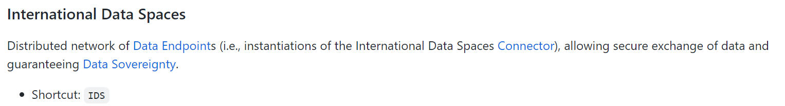
Bron: International dataspaces(IDSA)
“The term ‘data space’ refers to a type of data relationship between trusted partners who adhere to the same high level standards and guidelines in relation to data storage and sharing within one or many Vertical Ecosystems.” Bron: GAIA-X
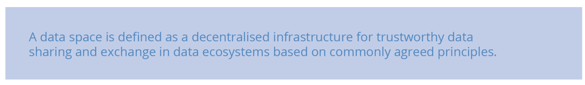
Bron: OPENDEI
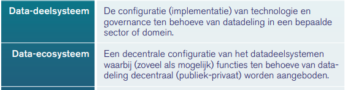
Bron: DIGICampus
Het is hier niet van belang een discussie te voeren over welke definitie de juiste is. Belangrijk is te duiden, dat data spaces gaan over vertrouwd, sovereign en veilig data delen tussen de deelnemers op federatieve, gedistribueerde wijze en op basis van gezamenlijk overeengekomen afspraken en besturing. Deze aspecten van data spaces komen in de beschrijvingen naar voren. De invulling van deze aspecten om te komen tot daadwerkelijk vertrouwd, sovereign en veilig data delen is en wordt in verschillende initiatieven verder uitgewerkt. Daarmee geven deze data space initiatieven ieder een specifieke invulling geven aan het delen van data.
2.3 Data space initiatieven beschouwd
Anno 2022 bestaan verschillende data space initiatieven en deze zijn vaak gericht op een specifieke sector of domein. Deze initiatieven vergemakkelijken het delen van data voor hun deelnemers, zowel voor afnemers (consumenten) als aanbieders van data (producenten) in een bepaalde toepassingsdomein of vanuit een bepaald sectorperspectief. Er zijn verschillende benaderingen voor het creëren van data spaces ontwikkeld in verschillende sectorale domeinen, waarvan de geo-informatie infrastructuur er ook één is. Data spaces in het ene toepassingsdomein kunnen verder in ontwikkeling zijn en dan in het andere domein.
Naast sector- of doemien specifieke data space initiatieven bestaan ook enkele cross-domein initiatieven, die domein-overstijgende principes, standaarden of functionaliteiten voor data delen ontwikkelen en afspreken. Nieuwe of bestaande data space initiatieven, gericht op het creëren van een data space in een bepaald domein of sector, kunnen weer principes, concepten, funties en bouwstenen adopteren van deze domein-overstijgende initiatieven.
In deze verkenning zijn de volgende data space initiatieven nader beschouwd en uiteengezet via de quick-scan analyse en bezien:
International Data Spaces Association (IDSA);
Gaia-X;
OpenDEI;
Data Sharing Coalition;
De Europese Geo-Informatie Infrastructuur (INSPIRE)
De Nationale Geo-Informatie Infrastructuur (NGII).
iSHARE.
2.4 Opzet quick-scan analyse
Als concept wordt de data space vaak beschouwd aan de hand van de wijze waarop het data delen tot stand komt. Daarvoor wordt vaak een actorenmodel geschetst met de actoren, en rollen en hun onderlinge samenhang en interacties. En onmisbaar is ook het bouwstenenmodel, dat inzicht geeft in de governance bouwstenen en meer technische bouwstenen van de data space. Voor deze verkenning is het bouwstenenmodel van OPENDEI toegepast (figuur 2.1).
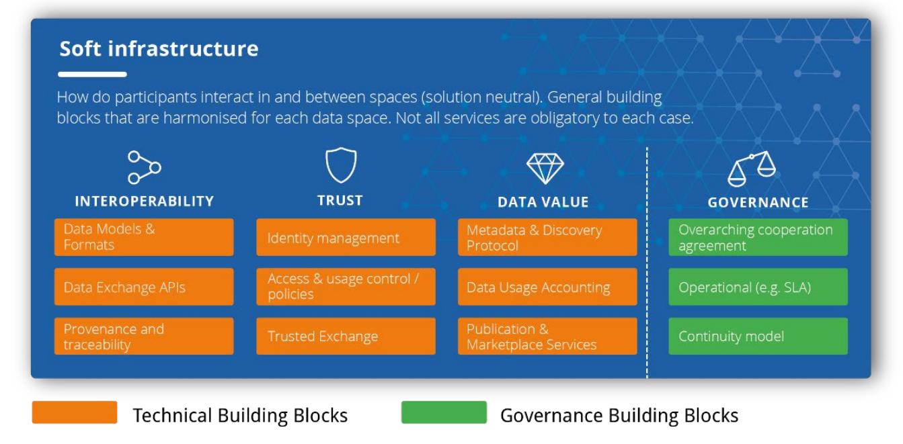
Figuur2.1–Algemene data space bouwstenen naar OPENDEI[[OPENDEI-DPR]]
We beschouwen daarvoor een aantal ‘data space’ initiatieven, waarbij telkens een aantal elementaire aspecten en onderdelen aan de orde komen:
Domein en cross-domein typering;
Een overall referentie architectuur voor de data space;
Governance, zoals actorenmodel, afspraken(stelsel) en overeenkomsten;
Standaarden voor interoperabiliteit betreffende data (modellen en formaten), uitwissel api’s, herkomst en traceerbaarheid van data en metadata;
Voorzieningen nodig voor de vertrouwd datadelen, zoals identificatie en toegang verlenen, gebruikscontrole en vertrouwd uitwisselen (en beveiliging);
Data waarde bouwstenen, zoals catalogi, clearinghouse (logging data transacties), vocabulaires en een marktplaats (app store).
Technische infrastructuur.
Het OPENDEI model is toegepast in een conceptueel model (zie figuur 2.2), dat leidraad is geweest voor een quick-scan analyse waarbij verschillende data space initiatieven aan onderworpen zijn. Met dit model is de quick-scan analyse uitgevoerd naar de analogie van een eerder uitgevoerde analyse van de Data Sharing Coalition [DSC-PP].
Van het OPENDEI model zijn de 4 vier groepen of typeringen van de dataspace elementaire onderdelen overgenomen: governance, interoperabiliteit, vertrouwen en data waarde. Het OPENDEI model is niet één op één overgenomen, maar uitgebreid met enkele aanvullende onderdelen, zoals use cases / value cases en community building. De groepen interoperabiliteit, vertrouwen en data waarde krijgen daarbij een technische invulling in de vorm van ‘technische bouwstenen’ die in software implementaties tot uitdrukking komen. In hoofdstuk 5 is het OPENDEI model toegelicht en verder beschouwd.
Het (position paper) model van de Data Sharing Coalition [DSC-PP]) is gebruikt voor een soortgelijke analyse van vijf data space initiatieven. Van dit model is de domein en cross-domein typering overgenomen en de harde infrastructuur (technische infrastructuur). De ‘soft infrastructuur’ uit het position paper DSC is vervangen door het OpenDEI model. Uiteindelijk is ook het beschikbaar zijn van een referentie architectuur toegevoegd, omdat de referentie architectuur vaak overzicht en inzicht in de samenhang tussen de onderdelen van het betreffende data space initiatief.
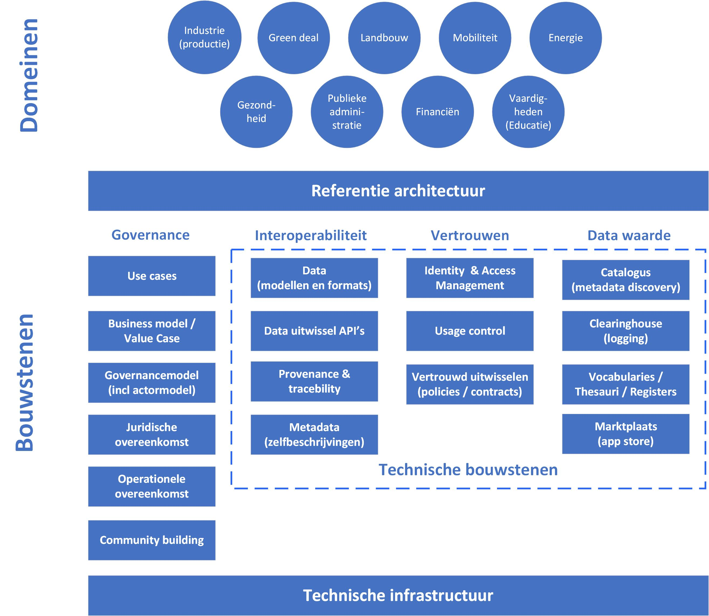
Figuur2.2–Focus en beschouwingsgebiedendataspacesvan deze verkenning
Hieronder volgt een korte beschrijving van de elementaire aspecten of beschouwingsgebieden van de data spaces. Het vergelijken van de verschillende initiatieven wordt door het gebruik van verschillende begrippen(kaders) en onderdelen is niet altijd eenduidig en in sommige gevallen lastig te typeren. Vandaar dat we hieronder de elementaire onderdelen kort beschrijven zonder daarmee een eenduidige omschrijving te willen geven, We zullen daarbij tevens soortgelijke begrippen benoemen zoals die in de diverse initiatieven worden gehanteerd.
2.4.1 Domein en cross-domein typering
Allereerst beschouwen we de domeinen waar een data space initiatief actief is. Daarvoor zijn de negen data space domeinen, die worden onderscheiden in de Europese data strategie [EUSD] als uitgangspunt genomen: industrie (productie), green deal, landbouw, mobiliteit, energie, gezondheid, publieke administratie, financiën en vaardigheden (educatie). Sommige data space initiatieven richten zich op een specifiek domein, en sommige initiatieven richten zich op meerdere of op alle domeinen en zijn daarmee domein-overstijgend of cross-domein initiatieven.
2.4.2 Referentie architectuur
Een referentie architectuur is een herbruikbare architectuur, die gebaseerd zijn op best-practices. Het biedt een sjabloon voor het opstellen van specifieke enterprise-architecturen en oplossingsarchitecturen (‘’solution architectures’’). Het opstellen van een specifieke architectuur wordt daarmee een kwestie van het selecteren van herbruikbare principes en modellen, en het aanpassen aan de specifieke situatie. Dit zorgt voor een grote versnelling van het architectuurontwerpproces. Diverse data space initiatieven hebben om te beginnen een referentie architectuur opgesteld, onder diverse noemers: “Design Principles of Data Spaces” (OPENDEI), Data Sharing Canvas (Data Sharing Coalition), ‘Reference Architecture Model’ (IDSA) en ‘Architecture’ (Gaia-X) . De meeste van deze referentie architecturen zijn vrij hoog-over, dat wil zeggen een globale invulling van de onderdelen van een data space en hoe deze samenhangen en de technische bouwstenen functioneel beschreven. Soms is ook een uitvoeriger informatiemodel (IDSA) en de onderliggende technologie beschreven (Gaia-X, iSHARE). Vaak worden ook de actoren en hun functies en rollen benoemd (actormodel), evt. hun onderlinge relaties en datadeel-processen beschreven. En wordt de governance (globaal) geduid.
2.4.3 Governance
Governance is de groep van onderdelen in data spaces, dat moet zorgen voor de afspraken over de besturing en de actoren, de waardebepaling, de juridische en operationele overeenkomsten en community building. Het begint met zinvolle use cases.
Met de bouwsteen Use cases wordt aanwezigheid van uitgewerkte data space use case of toepassing vanuit het oogpunt van de gebruiker bedoeld. Veel data space initiatieven werken vanuit use cases aan de implementatie van de data space.
Het Business model en value cases (de datawaarderingsmethode) houdt zich bezig met methoden om de waarde te schatten van data, die door organisaties in de data space worden gedeeld. Veelal gaat het daarbij om het duiden van het belang van het business oftewel de value case en/of hoe een business model kan worden opgesteld. In enkele gevallen is een business model beschikbaar.
Het Governance model geeft inzicht in de wijze waarop de data space bestuurd wordt. Vaak is daarvoor een besturingsmodel beschikbaar met entiteiten en hun belegde verantwoordelijkheden, taken en rollen. Een actormodel maakt daar vaak deel vanuit. Actoren in de data space zijn de data eigenaren (producenten), data providers, data gebruikers (consumenten) en andere intermediairs (brokers, auditors, etc..).
De bouwsteen Juridische overeenkomst zijn doorgaans de verordeningen die verwijzen naar wetten of administratieve regels, uitgevaardigd door een data space organisatie, die worden gebruikt om het gedrag van de deelnemers aan de data space te sturen of voor te schrijven. Ook wettelijke verordeningen van landen vallen onder de juridische overeenkomsten. Zo dienen data spaces rekening te houden met diverse wetgevende vereisten, zoals de privacy wetgeving (AVG), wetgeving voor electronische identificatie (eIDAS), en betalingsverkeer in Europa (PDS2).
De bouwsteen Operationele overeenkomst is een soort van Service Level Agreement (SLA). Een SLA is een contract tussen een tussen een dataprovider en een consument, of tussen een dataeigenaar en een dataprovider. Het beschrijft de diensten die door de dataprovider moeten worden geleverd, samen met de normen waaraan de levering van de datadiensten moet voldoen. De geleverde datadiensten moeten voldoen aan gespecificeerde normen, terwijl de consument van de diensten het recht heeft om te eisen dat aan deze normen wordt voldaan.
Een operationele overeenkomst kan daarnaast ook op andere operationele afspraken betrekking hebben, bijvoorbeeld:
- Rapportageafspraken, zoals rapportages die moeten worden geproduceerd als onderdeel van de werking van de data space en in overeenstemming met de onderliggende bedrijfsmodellen. Het specificeert de parameters die moeten worden geregistreerd en gerapporteerd voor elke zakelijke actor en transactie van de data space;
- Factureringsafspraken. De middelen voor facturering van verleende datadiensten en transacties. In dit verband is de specificatie van het facturerings-/heffingsschema van belang. Dit geeft aan hoe de facturering/in rekening moet worden gebracht;
- Contracten. Ze bieden een protocol voor de uitvoering van overeenkomsten tussen twee of meer partijen (voornamelijk de dataprovider en de consument). Als zodanig specificeren ze beleid voor datagebruik, juridische aspecten, SLA's en andere overeenkomsten op een machineleesbare en cryptografisch ondertekenbare manier.
Tenslotte is Community building een belangrijke bouwsteen bij de totstandkoming van een data space. Een geharmoniseerde aanpak voor het opzetten van data spaces is eigenlijk meer een coördinatie- en schaalprobleem dan een technologisch probleem. Om data spaces in te richten, die deelnemers controle geven over hun data en met elkaar samenwerken in verschillende domeinen, is adequate technologie naast proceskennis nodig om deze te benutten. Dat betekent samenwerking, coordinatie en afstemming met alle stakeholders en deelnemers in de data space om te komen tot gemeenschappelijke en gedragen afspraken. Met Community building wordt dit proces gefaciliteerd.
2.4.4 Interoperabiliteit
Interoperabiliteit is de groep van onderdelen in data spaces, dat moet zorgen voor de afspraken over de uitwisseling van data. De volgende bouwstenen behoren tot deze categorie data ‘interoperabiliteit’: data (modellen en syntax), data uitwissel API’s, herkomst en traceerbaarheid en metadata.
De bouwsteen ‘Data (modellen en formats) stelt een gemeenschappelijk formaat vast voor datamodelspecificaties (informatiemodellen) en syntax van data voor data-uitwisseling (dataformaten). In combinatie met de bouwsteen ‘API’s voor data-uitwisseling’ zorgt dit voor volledige interoperabiliteit tussen deelnemers in een data space.
De bouwsteen ‘Data uitwisselAPI's’ vergemakkelijkt het delen en uitwisselen van data, d.w.z. dataverstrekking en (her)gebruik tussen deelnemers aan de data space.
De bouwsteen ‘Herkomst en traceerbaarheid’ van data biedt de middelen voor tracering en tracking in het proces van dataverwerking en - verstrekking en -gebruik. Het biedt daarmee de basis voor een aantal belangrijke functies, van identificatie van de afstamming van data tot auditproof logging van transacties mogelijk maakt. Het maakt ook de implementatie mogelijk van een breed scala aan tracking use cases op applicatieniveau, zoals het volgen van dataproducten in de verwerkingsketen van data spaces.
De bouwsteen ‘Metadata’ zorgt voor de beschrijving van data producten in de data space, ook wel ‘zelfbeschrijving’ (IDSA) of ‘Data Asset Self-Description’ (Gaia-X) genoemd . De metadata omvat een brede beschrijving van de data producten en de deelnemers in de data space alsook de publicatie- en vindmechanismen voor data producten en deelnemers. Dergelijke zelfbeschrijvingen (metadata) kunnen zowel domein-overstijgend als domeinspecifiek zijn.
Metadata is hier als onderdeel bij interoperabiliteit toegevoegd, omdat metadata zelfbeschrijvingen ook uitgewisseld moeten worden. Ook hier speelt de uitwisseling van de zelfbeschrijvingen en het bereiken van interoperabiliteit met vindvoorzieningen in data spaces (catalogi). Deze bouwsteen heeft een duidelijke relatie met de bouwsteen ‘catalogus’ in de categorie data waarde. Metadata van data producten wordt geplaatst in één of meerdere data space catalogi om data producten en deelnemers in de data space vindbaar te maken.
2.4.5 Vertrouwen
In diverse data space initiatieven bestaat deze categorie ook bekend als het ‘Trust framework’. Voorbeelden zijn iSHARE en International Data Spaces. In de categorie ‘Vertrouwen’ treffen we ook een viertal bouwstenen aan.
Met de bouwsteen ‘Identiteit management’ (IM) kunnen belanghebbenden die in een data space actief zijn, worden geïdentificeerd, geverifieerd en geautoriseerd. Het zorgt ervoor dat organisaties, personen, machines en andere actoren worden voorzien van erkende identiteiten en dat die identiteiten kunnen worden geverifieerd, met inbegrip van aanvullende informatieverstrekking, die door autorisatiemechanismen kunnen worden gebruikt om toegangs- en gebruikscontrole mogelijk te maken.
De bouwsteen ‘toegangs- en gebruikscontrole’ garandeert de handhaving van het beleid inzake datatoegang en -gebruik dat is gedefinieerd als onderdeel van de algemene voorwaarden, die zijn vastgesteld wanneer data producten worden gepubliceerd (zie de bouwsteen Marktplaats’ verderop) of waarover wordt onderhandeld tussen providers en consumenten. Een dataprovider implementeert doorgaans mechanismen voor datatoegangsbeheer om misbruik van haar data te voorkomen, terwijl controlemechanismen voor datagebruik meestal worden geïmplementeerd aan de kant van de consument om misbruik van data te voorkomen. In complexe datawaardeketens worden beide mechanismen gecombineerd door ‘prosumenten’. Toegangscontrole en gebruikscontrole zijn afhankelijk van identificatie en authenticatie.
De derde bouwsteen ‘vertrouwde uitwisseling’ vergemakkelijkt de vertrouwde data-uitwisseling tussen deelnemers en stelt de deelnemers aan een data-uitwisseling gerust dat andere deelnemers echt zijn wie ze beweren te zijn en dat ze voldoen aan de gemaakte afspraken van de data space. Dit kan enerzijds worden bereikt door organisatorische maatregelen (zoals het werken met certificering / certificaten of door geverifieerde referenties) of anderzijds door eventuele technische maatregelen als attestering op afstand.
2.4.6 Data waarde
In de categorie data waarde wordt de waarde van de data space zichtbaar voor de deelnemers van de data space. Vier bouwstenen worden onderscheiden: een catalogus voor het vindbaar maken van dataproducten en deelnemers, een clearinghouse om transacties vast te leggen), een vocabulaire met een overzicht met de semantiek van de dataproducten, en een marktplaats om vragers en aanbieders van dataproducten bij elkaar te brengen. Vaak worden deze bouwstenen ook gezien als federatieve bouwstenen.
De bouwsteen ‘catalogus’ bevat de publicatie- en vindmechanismen voor data producten en deelnemers aan de data space, waarbij gebruik wordt gemaakt van de algemene zelfbeschrijvingen (metadata) van data en deelnemers aan de data space. Voor de cataloguis worden verschillende termen gebruikt, zoals ‘metadata discovery’ door OPENDEI, ‘meta data broker’ door IDS en ‘Federated Catalogue’ door Gaia-X. Daarmee heeft deze bouwsteen een duidelijk relatie met de bouwsteen ‘metadata’. Vaak werken catalogi ook samen en bieden mogelijkheden om elkaars metadata of zelfbeschrijvingen te oogsten en uit te wisselen. Ook hiervoor spelen afspraken en standaarden een belangrijke rol, zoals voor het uitwisselen en oogsten van metadata.
De bouwsteen ‘clearinghouse’ vormt de basis voor vastlegging van de transacties die de toegang tot en/of gebruik van data door verschillende gebruikers vastleggen(‘loggingsfunctie’). In OPENDEI heet deze bouwsteen ‘accounting van datagebruik’ en in ‘transaction logging’. Het clearinghouse ondersteunt belangrijke functies voor het vastleggen van clearing, betaling en facturering (inclusief transacties voor het delen van data zonder de betrokkenheid van de marktplaats).
De bouwsteen ‘vocabulaires’ zorgt voor de semantische samenhang en afstemming via het vastleggen van de semantiek in de data space. Hiervoor worden de verschillende begrippen afkomstig van vnl. data modellen (informatiemodellen) van de data space vastgelegd en beschikbaar gesteld via federatieve diensten. In IDS wordt deze rol de vocabulaire-provider genoemd en het platform waar gemeenschappen gedeelde vocabulaires publiceren en onderhouden, wordt de ‘vocabulary hub’ genoemd. Andere aanduidingen hiervoor zijn begrippenlijsten, conceptenbibliotheken, taxonomien, thesauri en semantische registers en ontologien. Ook hier speelt een vindvoorziening een rol.
De bouwsteen ‘marktplaats‘ omvat het online aanbieden van data producten en deelnemers onder gedefinieerde voorwaarden te ondersteunen, moeten marktplaatsen worden opgericht. In IDS wordt deze bouwsteen ‘App store’ genoemd. Deze bouwsteen ondersteunt de publicatie van aanbiedingen, het beheer van processen die verband houden met het maken en monitoren van slimme contracten (die de rechten en plichten voor datagebruik duidelijk beschrijven) en regelt toegang tot data producten. Op basis van de technische behoeften kunnen de bijbehorende backend-processen voor beoordeling, clearing en facturering worden uitgevoerd. Deze bouwsteen vergemakkelijkt daardoor ook de uitbreiding van data spaces met meer data producten en deelnemers.
2.4.7 Technische infrastructuur
De in de vorige paragrafen beschreven bouwstenen in het OPENDEI model worden ook wel aangeduid met ‘zachte infrastructuur’. Met de infratsructuur wordt hier bedoeld de ‘harde infastructuur‘ bestaande uit de hardware en bijbehorende software om interoperabiliteit, connectiviteit en draagbaarheid tussen de data providers te creëren. Denk daarbij aan aspecten en data opslag, cloud en edge service providing en netwerkconnectiviteit. De meeste data space initiatieven laten de inrichting van de infrastructuur over aan de infrastructuur providers markt en blijven daarmee onafhankelijk en kunnen leveren aan meerdere infrastructuur platforms.
3. International Data Space (Association)
Dit hoofdstuk beschrijft en introduceert het gebruik van het concept ‘dataspace’ vanuit het perspectief van deInternational Data Space Association (IDSA).Naast een korte introductie beschrijven we deessentiëleen ondersteunendebouwstenenvan deIDSAdataspace. De afsprakenoverhetdata delen komen globaalaan de orde en het actorenmodel wordenkortbenoemd.
3.1 International Data Space (Association)
De International Data Spaces Association (IDSA) is op een missie om de toekomst van de wereldwijde, digitale economie te creëren met International Data Spaces (IDS), een veilig, soeverein systeem voor het delen van data waarin alle deelnemers de volledige waarde van hun data kunnen realiseren. IDS maakt het mogelijk om nieuwe "slimme diensten" en innovatieve bedrijfsprocessen in verschillende bedrijven en industrieën te laten werken, terwijl ervoor wordt gezorgd dat de zelfbepaalde controle over data gebruik (datasoevereiniteit) in handen blijft van dataproviders.
De IDSA heeft tot doel de data-gedreven economie van de toekomst te ontsluiten door de blauwdruk te bieden voor veilige, zelfbepaalde data-uitwisseling tussen partners die elkaar vertrouwen. Dit is wat wordt aangeduid als ‘dataoevereiniteit’en het is van vitaal belang, in het licht van het feit dat gegevenstoegang en -uitwisseling snel kritieke succesfactoren worden voor zowel bedrijven, overheid en particulieren als hele economieën. Tot nu toe hebben vooral bedrijven enorme hoeveelheden waardevolle data bewaard, die ze niet op hun eigen voorwaarden konden beheren, delen of te gelde konden maken. De IDSA heeft een referentiearchitectuur en een reeks overeenkomsten gedefinieerd die kunnen worden gebruikt om data spaces te creëren die vertrouwen tussen partners en een basis voor innovatieve, nieuwe bedrijfsmodellen, producten en diensten tot stand brengen.
Data spaces zijn de sleutel tot de wereldwijde, digitale economie. De Europese Commissie definieert Europa's weg voorwaarts naar de digitale economie van de toekomst. Een kernelement van hun visie: internationale data spaces geworteld in Europese waarden van vertrouwen en de zelfbepaling van datagebruik door dataproviders, die we datasoevereiniteit noemen. Het IDSA-raamwerk en het IDS Reference Architecture Model (IDS-RAM) vormen een integraal onderdeel van de EU Data Strategie. De rol van IDSA voor de EU data strategie is beschreven in dit white paper.
3.2 IDS bouwstenen voor data delen
IDSA definieert standaarden en specificaties voor datasoevereiniteit. Deze standaarden en specificaties beschrijven de technische basis, te gebruiken standaarden en afspraken nodig voor soeverein, vertrouwd en veilig data delen. In het IDSA Regelboek [IDS-PPRB] is een overzicht opgenomen met globale activiteiten van IDSA (figuur 3.1). Allereerst kent IDSA organisatorisch gezien drie onderdelen:
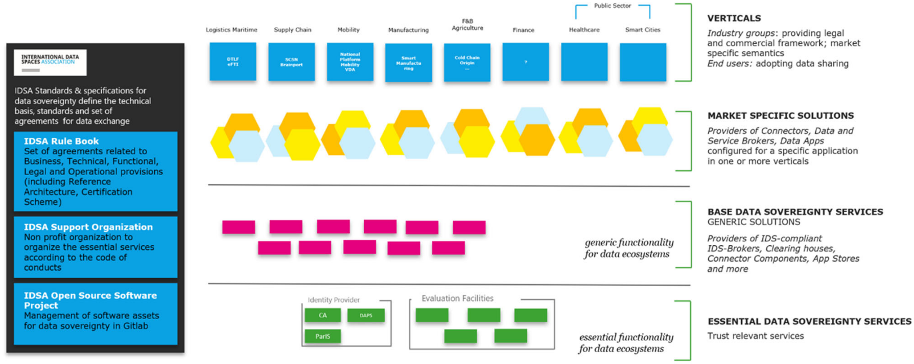
Figuur3.1 –Globale overzicht van de IDSA organisatie[IDS-PPRB]
Om ervoor te zorgen dat de toekomstige data-economie soepel functioneert en zijn waardepropositie waarmaakt, moeten alle spelers zich houden aan een gemeenschappelijk governancekader dat de functionele, technische, operationele en juridische overeenkomsten specificeert die hun rollen en interacties binnen en tussen de verschillende delen van het ecosysteem structureren. Dit boek met regels en richtlijnen schetst dat kader [IDS-PPRB]. Door deze regels en richtlijnen te volgen, kunnen alle spelers samenwerken om het gedeelde doel te bereiken om de volledige waarde van de wereldwijde data-economie te ontsluiten.
De IDSA-ondersteuningsorganisatie is verantwoordelijk voor het bijhouden van het regelboek en voor het ondersteunen van de toepassing ervan. De IDSA-ondersteuningsorganisatie helpt bij het coördineren van belangrijke processen en als algemeen bestuur een basis voor de realisatie van interne structuren en interfaces met andere partijen.
Daarnaast bestaat het IDSA Open Source project, dat de software componenten ontwikkeld voor het implementateren en testen van de essentiele IDSA componenten.
De belangrijke actoren en bouwstenen van een IDS data space zijn in onderstaande figuur 3.2 weergegeven.
Figuur3.2- IDS bouwstenen voor data-uitwisseling(bron:IDSAinfographic)
De dataprovider is een apparaat, dat de data van de eigenaar overdraagt via de IDS connector naar de data space. Het stelt anderen in staat om de data te gebruiken met behoud van controle over de data: het wie, hoe, wanneer, waarom en tegen welke prijs. Dat is datasoevereiniteit, de basis voor het ontsluiten van de waarde van data. Dat wordt eveneens vastgelegd in ‘usage-policies’.
De dataconsument is een apparaat, dat de data van de eigenaar via de IDS connector opvraagt en gebruikt vanuit de data space.
IDSConnectors zijn de ‘data gateways’. De IDS connector is een speciale softwarecomponent waarmee de deelnemers gebruiksbeleid kunnen koppelen aan hun data in een data space, het gebruiksbeleid kunnen afdwingen en naadloos de herkomst van de data kunnen volgen. De IDS connector fungeert als gateway voor data en diensten en als vertrouwde omgeving voor apps en software. Apps worden uitgevoerd vanuit de App Store in de vertrouwde omgeving van de IDS connector. Apps voeren taken uit zoals transacties, aggregaties of analyse van de data.
De IDS connector is de centrale technische component voor veilige en vertrouwde data-uitwisseling. De connector verzendt data rechtstreeks naar de ontvanger in een vertrouwde, gecertificeerde data space, zodat de oorspronkelijke dataprovider altijd de controle over de data behoudt en de voorwaarden voor het gebruik ervan bepaalt. De IDS connector maakt gebruik van technologie die uw data in een soort virtuele "container" plaatst, die ervoor zorgt dat deze alleen worden gebruikt zoals overeengekomen volgens de voorwaarden die door de betrokken partijen zijn vastgesteld.
IDS-connectors kunnen de beschrijving van hun data producten (en eindpunten) publiceren bij een IDS makelaar of ‘broker’. Hierdoor kunnen potentiële dataconsumenten beschikbare data producten vinden in termen van content, structuur, kwaliteit, actualiteit en andere attributen. Met hetzelfde doel, het vinden en gebruiken van de data producten, beheren vocabulaireproviders een ‘vocabulary’, die wordt gebruikt om data producten te annoteren en te beschrijven (inclusief ontologieën, referentiedatamodellen, metadata-elementen). Vocabulaireproviders leveren deze (domeinspecifieke) vocabulaires en hun verwijzingen naar het IDS-informatiemodel, dat de basis vormt voor de beschrijving van data producten.
Het clearing house biedt decentrale en controleerbare traceerbaarheid van alle transacties indien nodig. Het is de ‘verrekenkamer’. Daarnaast biedt deze faciliteit clearing- en afwikkelingsdiensten voor alle financiële en data-uitwisselingstransacties binnen de data space.
App stores bieden data-apps aan. Dit zijn toepassingen die kunnen worden geïmplementeerd in IDS Connectors om taken zoals transformatie, aggregatie of analyse van de data uit te voeren. Data-apps kunnen worden gecertificeerd door door IDS goedgekeurde certificeringsinstanties. App stores kunnen worden geleverd door IDS-leden en moeten afzonderlijk worden gecertificeerd volgens IDS-normen.
Identiteitsproviders bieden een scala aan diensten voor het maken, onderhouden, beheren en valideren van identiteitsinformatie van en voor alle IDS deelnemers en componenten. Collectief vertrouwen in de bewijsbare identiteit van alle IDS-deelnemers is noodzakelijk voor het succesvol functioneren van op IDS gebaseerde data space.
Gecertificeerd voor betrouwbaarheid. Een transparant certificeringsproces zorgt voor vertrouwen van deelnemers en componenten binnen de data space. IDS maakt betrouwbare data-uitwisseling mogelijk tussen gecertificeerde data-aanbieders en -ontvangers, op basis van onderling overeengekomen regels.
3.3 IDS referentie architectuur
De IDS Referentie architectuur [IDS-RAM3] en [IDS-RAM4] beschrijft de logische samenhang van IDS als data space in vijf lagen:
De businesslaag beschrijft de actoren, hun rollen en interacties. Daarbij wordt eveneens aandacht besteed aan het belang van ‘identiteiten’ vastleggen en gebruikscontracten voor het uitwisselen van data;
De functionele laag onderscheidt de functionele aspecten van IDS in zes categorieën: vertrouwen, veiligheid en datasoevereiniteit, het ecosysteem van data, de interoperabiliteit, value-addings apps en de data markt;
De proceslaag beschrijft in hoofdlijnen de belangrijke processen van IDS: het proces van ‘onboarding’ in de data space, het data-uitwisselingsproces en proces van het publiceren, gebruiken en certificeren van data apps. Voor deze processen zijn standaard procesmodellen beschikbaar;
De informatielaag specificeert het informatiemodel, de domeinonafhankelijke, gemeenschappelijke taal van de IDS data space;
Op de systeemlaag wordt aandacht besteed aan de data connector, en zijn werking in het systeem van data apps en data marktplaats.
Naast de vijf architectuurlagen worden drie perspectieven beschreven op de architectuurlagen: het perspectief van de beveiliging, de certificering en de besturing (‘governance’). In onderlinge samenhang levert dit een geheel op aan componenten, processen besturingscomponenten voor IDS. IDS is geen data space, maar een kader om data spaces mee te maken.
Een belangrijk onderdeel van de IDS informatielaag is het IDS Informatiemodel. Het informatiemodel bevat alle aspecten die een rol spelen in de data space, hun definities en onderlinge relaties. Het informatiemodel ondersteunt de beschrijving, publicatie en identificatie van dataproducten en herbruikbare dataverwerkingssoftware, beiden in IDS "Digitale resources’ of eenvoudigweg "resources" of “bronnen” genoemd. Zodra de relevante bronnen zijn geïdentificeerd, kunnen ze worden uitgewisseld en geconsumeerd via semantisch geannoteerde, gemakkelijk vindbare diensten. Afgezien van deze kerngoederen beschrijft het informatiemodel essentiële bestanddelen van de internationale data spaces, de deelnemers, de infrastructuurcomponenten en de processen.
Een belangrijk onderdeel is de uitwerking van het concept van de ‘digital resource’. Een digital resource “in the context of the International Data Spaces is a uniquely identifiable, valuable, digital (i.e. non-physical) commodity that can be traded and exchanged between remote participants using the IDS infrastructure” [IDS-RAM3] [IDS-RAM4]. Centraal in de uitwisseling van ‘digital resources’ staat het C-model of ‘concernsmodel’ (zie figuur 3.3). Een digitale bron wordt in een data space nauwkeurig beschreven. Door een nauwkeurige beschrijving van het digitale bron worden dataconsumenten (gebruikers van de digitale bron) eenduidig geïnformeerd voor doelgericht gebruik van de bron en worden misverstanden voorkomen. Dat betekent dat digitale bronnen door de dataproductleveranciers van een adequate beschrijving wordt voorzien. De beschrijving omvat minimaal 6 categorieën van aandacht (‘de concerns’):
a. Content betreft de algemene beschrijving van het dataproduct, type dataproduct, dataformaat, datavoorbeeld en de fysieke omvang van de dataproduct;
b. Context betreft een beschrijving van de entiteit, de locatie (zoals coördinaat referentiesysteem) en de tijdcomponent (geldigheid, creatiedatum);
c. Concept, zoals beschrijving van begrippen, sleutelwoorden en typen entiteiten uit schema’s en ontologien;
d. Communicatie, zoals wijze van ontsluiting met data uitwissel API’s;
e. Commodity of gemeengoed, zoals kwaliteitsaspecten, provenance (en lineage of bewerkingsgang), beleid en beprijzing van bronnen;
d. Community of Trust, dat zorgt voor en veilige en soevereine uitwisseling van digitale bronnen tussen consumenten en producten en/of leveranciers.
Het digitale bron kan alleen geleverd worden na afronding van een dialoog tussen consument en dataleverancier. Denk aan: de aanvraag van de dienst door de afnemer, de wedervraag van de dienstverlener om meer informatie en het antwoord daarop. Deze dialoog stelt voorwaarden aan de afnemer. De afnemer moet de beschrijving van deze dialoog begrijpen, wil hij aan de voorwaarden kunnen voldoen.
In het informatiemodel zijn de conceptuele weergave van het digitale bron. Naast deze conceptuele weergave in de IDS referentie architectuur is ook de declaratieve en programmatische weergave van belang om tot de implementatie van een digitale bron en de diverse IDS bouwstenen te komen (zie figuur 3.4).
De conceptuele weergave of representatie van het informatiemodel biedt een overzicht op hoog niveau van de belangrijkste, grotendeels invariante concepten, zonder verplichting tot een bepaalde technologie of domein. Het richt zich op een algemeen publiek, omdat het basisinformatie biedt en een gedeeld begrip van de concepten bevordert door middel van een textueel document en een visuele notatie. Indien beschikbaar, verwijst IDS ook naar gerelateerde elementen van de declaratieve weergave en een programmatische weergave, waardoor wordt aangemoedigd om naar deze alternatieve implementaties te kijken.
De declarative weergave heet ‘IDS Ontology’ en geeft een normatief beeld van het IDS informatiemodel. Het is ontwikkeld op basis van de analyse, bevindingen en vereisten van de conceptuele representatie. Op basis van een stapel W3C Semantic Web-technologiestandaarden en standaardmodelleringsvocabulaires zoals DCAT, PROV en ODRL, biedt het een formele, machinaal interpreteerbare specificatie van concepten die door de conceptuele weergave worden beoogd. Bovendien beschrijft en definieert het formeel entiteiten van de IDS om de gestructureerde metadata van deze entiteiten te kunnen delen, zoeken en beredeneren. Als zodanig omvat het een compleet referentieel model dat de afleiding van een aantal programmatische representaties mogelijk maakt. De IDS Ontology wordt meestal gebruikt en geïnstantieerd door kennisingenieurs, ontologie-experts of informatiearchitecten. Het definieert een vrij minimal, domein-agnostisch "kernmodel" en vertrouwt op standaard- en aangepaste vocabulaires van derden omhoofdspecifieke feiten uit te drukken. Volgens de gangbare praktijkworden bestaande domeinvocabulaires en -normen waar mogelijk hergebruikt, waardoor acceptatie en interoperabiliteit worden bevorderd.
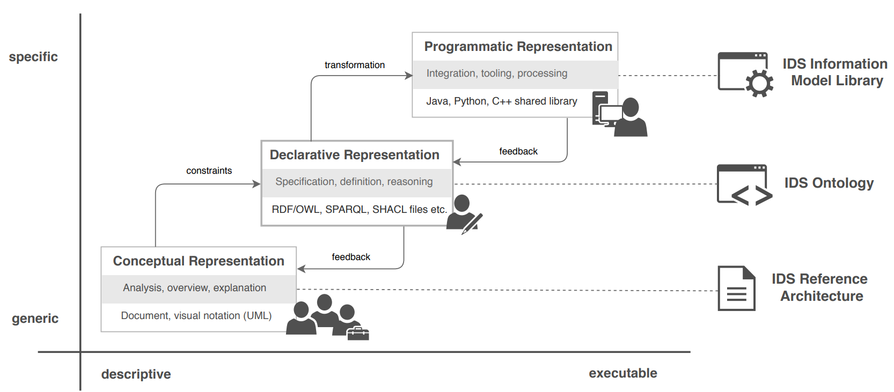
Figuur3.4–Weergaven van het IDS informatiemodel(vrij naar[[IDS-RAM4]])
Tenslotte, richt de programmatische weergave van het informatiemodel richt zich op softwareleveranciers door naadloze integratie van het informatiemodel te ondersteunen met een ontwikkelingsinfrastructuur waarmee softwareontwikkelaars vertrouwd zijn. Het bestaat uit een programmeertaalgegevensmodel (bijv. Java, Python, C ++) dat wordt geleverd als een reeks gedocumenteerde softwarebibliotheken (bijv. JAR-bestanden). De programmatische weergave biedt de best-effort mapping van de IDS Ontology op de native structuren van een doelprogrammeertaal. Het stelt software ontwikkelaars in staat om eenvoudig instanties van het informatiemodel te maken die voldoen aan de IDS Ontology.
IDS heeft voor de programmatische weergave al diverse technische bouwstenen beschikbaar. Deze IDS-componenten, zoals een data connector of metadata broker, kunnen helemaal opnieuw gebouwd worden door bestaande bronnen als sjabloon te gebruiken, of u kunt bestaande open source-componenten hergebruiken die beschikbaar zijn in de IDS Github-opslagplaats. Overzicht van (open source) software implementaties van de IDSA bouwstenen zijn hier te vinden op github.
3.4 Synthese
IDS is in Europa een breed gedragen initiatief voor het data space. IDS richt zich op standaarden en specificaties voor cross-domein data spaces. De [IDS-RAM4] is de referentie architectuur, die de logische samenhang beschrijving geeft van de verschillende aspecten van een data space; van actoren en hun rollen, functionele aspecten en bouwstenen, de cruciale processen, de informatielaag met beschrijving van de ‘digital resources’, en de systeemlaag met data connectors . In diverse gepubliceerde documenten worden onderdelen van de deze globale architectuur verder uitgewerkt. De focusgebieden van IDS zijn in figuur 3.5 Opgenomen.
Het informatiemodel is een generiek cross-domein model, zonder binding aan een bepaald toepassingsdomein.
In enkele use cases wordt de werking van IDS de bouwstenen beproefd. In een position paper [IDS-PPBM] wordt een methode aangeboden om de business model en value case van de data space vast te stellen. IDS kent geen governance model voor data spaces, de referentie architectuur heeft wel de actoren en rollen van een data space vastgelegd. Een bijbehorende governance model voor de data space wordt aan de deelnemers van de domeinspecifieke data space overgelaten. Diverse use cases illustreren het gebruik van IDS.
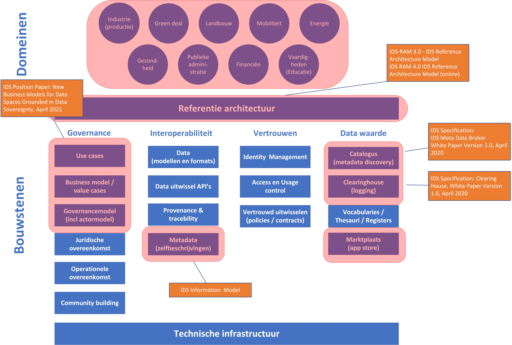
Figuur3.5-FocusgebiedenIDSals dataspaceinitiatief
Wat betreft de interoperabiliteit biedt het IDS informatiemodel geen meta-model voor het definiëren van data of uitwiseel API’s. De domeinmodellering is doorgaans gebaseerd op gedeelde vocabulaires en schema's, zoals bijvoorbeeld verstrekt door domeinspecifieke gemeenschappen. Dat is aan de domeinspecifieke gemeenschappen gelaten en is geen onderdeel van IDS. Interoperabiliteit is uitgewerkt in de vorm van de metadata en de data connector. Ook is aan geen of nauwelijks aandacht besteed aan ‘provenance’ en ‘tracebility’, anders dan dat de beschrijving van de digitale bronnen ook de provenance mee genomen moet worden. Daarmee is provenance onderdeel van het informatiemodel.
Ook voor het aspect vertrouwen heeft IDS eveneens globale aspecten in het informatiemodel uitgewerkt. Dat is ook uitgewerkt in enkele position papers opgeleverd, die globaal inzicht geven in de werking bijvoorbeeld van het ’usage control’ [IDS-PPUC] en ‘certificering [IDS-PPCE].
Voor enkele van de vier (technische) bouwstenen (catalogus, clearinghouse, vocabularies en marktplaats) zijn eveneens specificaties opgesteld en uitgewerkt: voor de focusgebieden ‘metadata broker’ [IDS-MDB] , ‘clearinghouse’ [IDS-CH]. Ook zijn de diverse uitgewerkte IDS componenten zijn terug te vinden op github [IDS-G].
Op de systeemlaag worden de rollen die op de businesslaag zijn gespecificeerd, toegewezen aan een concrete data- en servicearchitectuur om te voldoen aan de vereisten die zijn gespecificeerd op de functionele laag, wat resulteert in wat kan worden beschouwd als de technische kern van de IDS. Uit de vereisten die aan de functionele laag zijn geïdentificeerd, resulteren drie belangrijke technische componenten: de connector, de metadata broker en de App Store. Dit zijn duidelijke IDS focusgebieden, die respectievelijk verwijzen naar bouwstenen metadata (zelfbeschrijvingen), de catalogus (metadata discovery) en de marktplaats.
De connector, metadata broker en App Store worden ondersteund door extra componenten (die niet specifiek zijn voor IDS, maar wel zijn gespecificeerd door IDS [IDS-RAM4]:
de Identity Provider (vanuit het perspectief van de beveiliging);
de Vocabulary Hub (zoals momenteel gedefinieerd buiten IDS);
de Update Repository (d.w.z. de bron voor updates van de aanwezige connectors) afhankelijk van de toegepaste connectortechnologie;
de Trust Repository.
Ook kent IDS open software implementaties (bouwstenen), die momenteel voornamelijk beschouwd kunnen worden als referentie implementaties. Zo zijn diverse implementaties voor de IDS connectors beschikbaar.
De IDSA Data Space Radar is het platform voor het vinden van use cases om data spaces tot leven te brengen en brengt alle IDS data spaces in kaart in één gebruiksvriendelijke tool. De radar behandelt use cases van verschillende gradaties van volwassenheid, van de fase van het maken van een business case tot echte data spaces; van gepland tot pilot tot volledig operationeel, in verschillende sectoren en functionele domeinen.
4. Gaia-X
Dit hoofdstuk beschrijft en introduceert de het gebruik van de het concept ‘dataspace’ vanuit het perspectief van deGaia-Xals ‘verbinder tusseneco-systemen’.Naast een korte introductie beschrijven we de functionele bouwstenen en onderscheiden federatieve diensten van GIA-X. De afspraken over interoperabiliteit en standaarden voor data delen komt aan de orde en het actorenmodel worden benoemd. En we staanevenstil bij de positionering vanGaia-Xten opzichte van het in het vorig hoofdstuk geïntroduceerdeIDSinitiatief.Gaia-Xen IDS hangen nauw met elkaar samen.
4.1 Gaia-X als verbinder tussen ecosystemen
Gaia-X is een Europees initiatief, dat een softwareraamwerk van controle en governance ontwikkelt en een gemeenschappelijke reeks beleidsregels en regels implementeert die kunnen worden toegepast op elke bestaande cloud / edge-technologiestack om transparantie, controleerbaarheid, portabiliteit en interoperabiliteit tussen data en diensten te verkrijgen. Het raamwerk is bedoeld om te worden geïmplementeerd bovenop elk bestaand cloudplatform dat besluit zich te houden aan de Gaia-X-standaard. Gaia-X is geen marktexploitant en zal ook geen van de door het kader vereiste diensten rechtstreeks of uitsluitend exploiteren. Gaia-X-diensten zullen worden gecreëerd, geëxploiteerd en geadopteerd door de markt door exploitanten, die besluiten de Gaia-X-standaard te adopteren.
De naam van het project Gaia-X komt overeen met de hoge ambities: vernoemd naar de Griekse aardgodin Gaia, die één van de eerste godheden was die uit de chaos kwam, is Gaia-X bedoeld om een orde te scheppen in de digitale economie in Europa. Gaia-X zal drie doelstellingen dienen:
Datasoevereiniteit. Europese bedrijven en organisaties moeten altijd de keuze hebben waar en bij wie ze data opslaan en verwerken en waar ze digitale diensten afnemen. Gaia-X wil monopolies en daarmee een eenzijdige afhankelijkheid van Europa van grote niet-Europese platformaanbieders voorkomen. Met name kleine en middelgrote ondernemingen moeten kunnen profiteren van de transparantie van de markt, eenvoudige toegang tot diensten en aanbiedingen op maat.
Beschikbaarheid van data. Wanneer data de belangrijkste grondstof worden, hebben Europese bedrijven, overheden, instellingen en burgers garanties nodig om data op een betrouwbare, veilige en transparante manier uit te wisselen. Zelfs wanneer deze data door vele handen, systemen en fasen gaan.
Innovatie. Gaia-X is bedoeld om innovatie in Europa te bevorderen en de digitale economie te versterken. De cloud en edge services die onder Gaia-X zijn verzameld, ondersteunen de digitale bedrijfsmodellen van het Europese bedrijfsleven en geeft deze de mogelijkheid om op basis van deze infrastructuur wereldwijd te groeien.
GIA-X als data space data space concept kent daarbij de volgende eigenschappen:
Een data space is een data-integratie concept, waarbij geen fysieke integratie van data plaats heeft, maar data federatief (of gedistribueerd) wordt aangeboden;
Het data space concept kent geen gezamenlijk semantische data schema, maar werkt met vocabulaires;
Er is geen ‘single source of truth’, data kan vaker voorkomen in een data space (data kan redundant aanwezig zijn);
Binnen een data space kunnen weer data spaces bestaan (geneste data spaces);
Een data space is nooit af, en evolueert in de tijd;
In data spaces staat data soevereiniteit centraal; de eigenaar van data wil weten wat er met zijn data gebeurt;
In een data space is altijd sprake van een vertrouwensrelatie tussen aanbieder en afnemer, via een token.
Gaia-X-standaard is daarmee een standaard, die data-uitwisseling mogelijk maakt in en tussen data spaces oftewel ‘Gaia-X data ecosystemen’. Een Gaia-X ecosysteem is een organiserend principe, dat de interactie van verschillende actoren en hun omgeving beschrijft als een geïntegreerd geheel, zoals in een biologisch ecosysteem. In een technische context verwijst het naar een reeks losjes gekoppelde actoren, die gezamenlijk een economische gemeenschap vormen. Gaia-X maakt onderscheid in een ‘Data Ecosysteem’ en een ‘Infrastructuur Ecosysteem’, elk met een andere focus op uitgewisselde data en diensten (zie figuur 3.1).
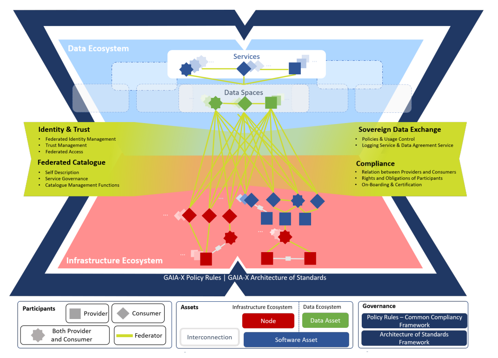
Figuur3.1–HetGaia-Xecosysteem(bron:[[GX-REFA]])
Ondanks dat elk van hen een afzonderlijke focus heeft, kunnen ze niet afzonderlijk worden bekeken omdat ze op elkaar voortbouwen, d.w.z. ze zijn complementair. Het Gaia-X Ecosysteem bestaat uit het geheel van alle individuele Ecosystemen die de Architectuur gebruiken en voldoen aan de Gaia-X eisen. Er kunnen verschillende individuele ecosystemen bestaan (bijv. Catena-X in de automobielsector), die zichzelf orkestreren, de architectuur gebruiken en al dan niet de (open source) software van de Gaia-X federatieve diensten gebruiken.
Gaia-X kent vier typen participanten: de providers, consumenten, de ‘provider en consument’ en enkele federators. De basisrollen van consument en provider worden gevisualiseerd als verschillende vierkanten, terwijl de federator verschijnt als een verbindingslaag, die diverse federatiediensten aanbiedt. Federatiediensten bieden verbindingen tussen en tussen de verschillende elementen en tussen of tussen de verschillende ecosystemen. Consumenten kunnen ook als aanbieders optreden door samengestelde diensten of verwerkte data aan te bieden via de federatieve catalogi.
De belangrijke drie assets zijn ‘data assets’ in het data ecosysteem, de ‘nodes’ in de infrastructuur ecosysteem en de ‘software assets’ als interconnectie tussen beiden.
Governance in Gaia-X omvat de beleidsregels, die verklaringen vormen van de doelstellingen, regels, praktijken of voorschriften van alle activiteiten van de deelnemers binnen het ecosysteem. Deze zijn vastgelegd in het Common Policy Framework. Daarnaast wordt in het Architecture of Standards Framework de reeds bestaande standaarden voor data, soevereiniteit en infrastructuurcomponenten beschreven en geintegreerd.
4.2 Gaia-X actoren en federatieve diensten
In het huidige Gaia-X architectuur [GX-AD], is het conceptueel model opgenomen met alle concepten in het kader van Gaia-X en de relaties daartussen (zie figuur 3.2). De Gaia-X kernconcepten zijn vertegenwoordigd in klassen. Een entiteit die blauw gemarkeerd is, laat zien dat een element deel uitmaakt van Gaia-X en daarom wordt beschreven door een Gaia-X zelfbeschrijving. Het bovenste deel van het model toont verschillende actoren van Gaia-X, terwijl het onderste deel de relatie met actoren buiten Gaia-X toont. Het algemene interactiepatroon tussen de actoren wordt ook beschreven in het document.
Een Gaia-X participant of deelnemer kan één of meer van de volgende rollen op zich nemen: Provider, Consument of Federator. Provider en consument representeren de kernrollen, terwijl de Federator hun interactie(s) mogelijk maakt. Een Aanbieder is een deelnemer die middelen ‘resources’ exploiteert in het Gaia-X Ecosysteem en deze als diensten aanbiedt. Voor een dergelijke dienst definieert de Aanbieder het dienstenaanbod inclusief algemene voorwaarden en technisch beleid. Bovendien biedt het de service-instantie aan met een zelfbeschrijving en het bijbehorende beleid. Federators zijn verantwoordelijk voor het aanbieden van federatieve diensten. Er kunnen één of meer Federators per type dienst zijn. Een Consument is een deelnemer, die datadiensten zoekt en diensten (service-instanties) gebruikt in het Gaia-X-ecosysteem om digitale aanbiedingen voor eindgebruikers mogelijk te maken. Alle deelnemers in Gaia-X hebben een zelfbeschrijving. Dit zijn ook de belangrijke kernbegrippen in de vorm van verplichte attributen voor Gaia-X zelfbeschrijvingen, die zijn gespecificeerd in het Gaia-X Trust Framework.
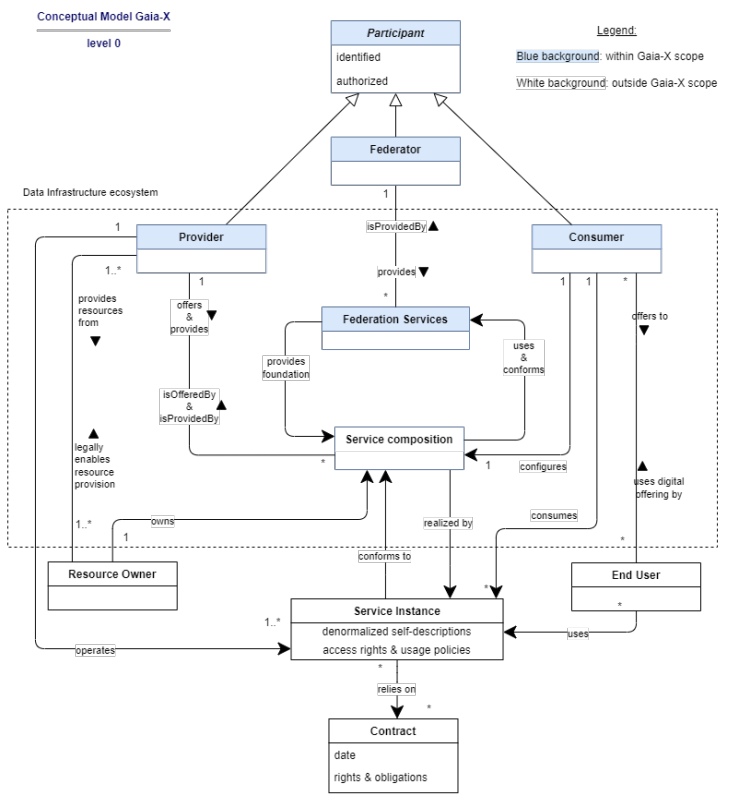
Figuur 3.2–Gaia-Xconceptueel model
De Gaia-XFederatieve Diensten zijn diensten, die nodig zijn voor de operationele implementatie van een Gaia-X Data Ecosysteem mogelijk te maken. Gaia-X onderscheidt vier groepen federatieve diensten, die nodig zijn om federatie van ‘resources’, deelnemers en interacties tussen ecosystemen mogelijk te maken. De vier groepen zijn Identity and Trust, Federated Catalogue, Sovereign Data Exchange en Compliance’. Het gaat om federatieve diensten gericht op identiteit & vertrouwen, compliance services voor soevereine data-uitwisseling en een federatieve catalogus waarin zelfbeschrijvingen van de deelnemende organisaties en hun diensten zijn opgenomen.
Binnen het Gaia-X federation diensten ontwikkelt de Gaia-X gemeenschap ook open-source softwarecomponenten. Deze open-source softwarecomponenten zijn beschikbaar voor iedereen en kunnen direct worden ingezet of als inspiratie dienen voor eigen ontwikkelingen. De GXFS vertegenwoordigen de minimale technische vereisten, die nodig zijn om een Gaia-X ecosysteem op te zetten en te exploiteren. Op basis van technische specificaties worden de federatieve diensten op basis van open-source code ontwikkeld. Dit staat ook bekend als de GXFS Toolbox. Ze worden ontwikkeld tot operationele diensten en voortdurend worden verbeterd door de Gaia-X-gemeenschap. Op gitlab is de open-source code van de implementatie van diverse Gaia-X federatieve diensten te vinden.
Om Gaia-X een hoger en ongekend niveau van vertrouwen in digitale platforms te garanderen, moeten we vertrouwen een gemakkelijk te begrijpen en aangenomen principe maken. Om deze reden heeft Gaia-X een ‘Trust Framework’ ontwikkeld - voorheen bekend als Gaia-X Compliance and en Labelling Framework, dat gegevensbescherming, transparantie, beveiliging, overdraagbaarheid en flexibiliteit voor het ecosysteem waarborgt, evenals soevereiniteit en Europese controle. Het Gaia-X ‘Trust Framework’ of vertrouwensraamwerk [GX-TF] is de set regels, die de minimale basis definiëren om deel uit te maken van het Gaia-X ecosysteem. Deze regels zorgen voor een gemeenschappelijk bestuur (de governance) en de basisniveaus van interoperabiliteit tussen de individuele ecosystemen. Met andere woorden, het Gaia-X-ecosysteem bestaat uit deelnemers en diensten, die de Gaia-X vereisten van het vertrouwensraamwerk volgen. Het vertrouwensraamwerk maakt gebruik van verifieerbare referenties (‘credentials’) en een linked data representatie. De set berekenbare regels die bekend staat als het nalevingsproces (‘compliance process’) is geautomatiseerd en geverifieerd.
4.3 Synthese
Gaia-X is in Europa een breed gedragen initiatief voor data spaces. Gaia-X richt zich op standaarden en specificaties voor cross-domein data spaces. De [GX-AD] is de referentie architectuur, die de logische samenhang beschrijving geeft van de verschillende concepten van een Gaia-X data space; van actoren en hun rollen, de functionele aspecten en bouwstenen in de vorm van federated services, de definitie van de zelfbeschrijving van bronnen en het uitgebreide ‘trust framework’ met ‘trust anchors’, ‘policy rules’ en ‘labels. In diverse gepubliceerde documenten worden onderdelen van de deze globale architectuur verder uitgewerkt. De focusgebieden van IDS zijn in figuur 3.3 opgenomen.
Het Gaia-X model is een generiek cross-domein model, zonder binding aan een bepaald toepassingsdomein. In een grote hoeveelheid use cases wordt de werking van een Gaia-X data space toegelicht in uiteenlopende toepassingsdomeinen. In diverse Gaia-X ‘lighthouse projecten’ wordt de werking van de Gaia-X bouwstenen inmiddels beproefd, zoals CATANA-X voor de automobielindustrie, AGDATAHUB voor de agri-business in het Mobility Data Space voor het mobiliteitsdomein.
In Gaia-X is een beperkt actormodel aanwezig, de actoren en hun rollen zijn globaal benoemd. Invulling van de actoren vindt plaats bij de implementatie van de dataspace. Daarnaast kent Gaia-X heeft een governancemodel, waarin de Gaia-X Association een belangrijke rol speelt. Veel is er echter nog niet bekend over de wijze waarop de Gaia-X data space worden bestuurd.
Community building is een belangrijke organisatorische pilaar van Gaia-X. Gaia-X is een gemeenschappelijk Europees project: het brengt mensen van verschillende bedrijven, onderzoeksinstellingen, verenigingen, overheden en politiek samen om te werken aan een gemeenschappelijk doel. Samen bouwen ze voort op het breedste spectrum van expertise om de toekomst van de digitale infrastructuur voor Europa te co-creëren - in speciale data spaces die de meest kritieke ‘industrieën’ bedienen. De organisatiestructuur van Gaia-X is gebouwd op drie pijlers: de Gaia-X Association, de nationale Gaia-X Hubs en de Gaia-X Gemeenschap. Daarbinnen zijn er verschillende werkgroepen en commissies. De uitwisseling binnen, tussen en buiten deze pijlers naar andere belanghebbenden (bijv. Europese Commissie, internationale initiatieven) wordt gewaarborgd.
Wat betreft de interoperabiliteit biedt het Gaia-X geen meta-model voor het definiëren van data of uitwissel API’s. De domeinmodellering is doorgaans gebaseerd op gedeelde vocabulaires en schema's, zoals bijvoorbeeld verstrekt door domeinspecifieke gemeenschappen. Dat is aan de domeinspecifieke gemeenschappen gelaten en is geen onderdeel van Gaia-X. Interoperabiliteit is uitgewerkt in de vorm van de zelfbeschrijving (metadata)van de ‘resources’. Ook is aan geen of nauwelijks aandacht besteed aan ‘provenance’ en ‘tracebility’. De zelfbeschrijving is vooral de waarborg voor de vertrouwd en souverein uitwisselen van data en kan door domeinspecifieke data space initiatieven ook aangepast worden.
Voor het aspect vertrouwen heeft Gaia-X diverse aspecten in het architectuur uitgewerkt en zijn eveneens technische specificaties beschikbaar. De technische specificaties geven daarbij in detail inzicht in de functionele en niet-functionele aspecten van diverse benodigde componenten. Voor de bouwstenen catalogus, clearinghouse en marktplaats zijn technische specificaties voor de ‘Federation Services’ [[GX-FSS] opgesteld en uitgewerkt zoals de ‘Federated Catalogue’ [GX-FC] , de ‘Data Exchange Logging Service’, ‘Continous Automated Monitoring’ en de ‘Portal’. Ook zijn voor verschillende ondersteunende componenten technische specificaties opgesteld: de ‘Personal Credential Manager’, de ‘Organizational Credential Manager’ en Services API. Van een deel van de technische specificaties zijn implementaties beschikbaar. De beschikbare (open source) software componenten (referentie implementaties) zijn terug te vinden op Gitlab [[GX-G]].
4.4 Gaia-X versus International Data Spaces
In het vorige twee hoofdstukken is International Data Spaces (IDS) en Gaia-X kort toegelicht vanuit de terminologie, concepten, actoren en referentie architectuur.
In oktober 2015 initieerde de Fraunhofer Society het International Data Spaces (IDS) project, voorheen Industrial Data Space, gefinancierd door het Duitse federale ministerie van Onderwijs en Onderzoek. Dit streven wordt ondersteund door de non-profitorganisatie International Data Spaces Association (IDSA), die actief bijdraagt. In 2022 bestaat de IDSA uit 138 leden van over de hele wereld, die samen de IDS-standaard voor datasoevereiniteit definiëren. De leden van de IDSA komen uit verschillende industrieën en bieden use cases waarbij de IDS-architectuur wordt toegepast in hun overeenkomstige domein, wat al een analogie met GAIA-X presenteert. Gaia-X is een vrij nieuw initiatief met een eerste architectuur op hoog niveau een demonstrator-achtige Minimal Viable GAIA-X is ontwikkeld, terwijl de IDS-architectuur veel volwassener is en al door verschillende systemen in wetenschap en industrie is getest. Dit heeft geresulteerd in een afstemming op hoog niveau tussen deze twee initiatieven.
In een IDS position paper [IDS-PPGXIDS] uit 2021 wordt een eerste overzicht van de samenhang tussen de architecturen van Gaia-X en International Data Spaces gegeven. De vergelijking laat zien dat Gaia-X niet zo volwassen is als het International Data Spaces (IDS) -initiatief, maar dezelfde visie volgt om datasoevereiniteit te verspreiden en een ecosysteem van vertrouwen te creëren voor het delen van gegevens. Het IDS-initiatief en het IDS Reference Architecture Model (IDS-RAM) bieden verschillende concepten en oplossingen die bijdragen aan de algemene visie van Gaia-X en aan de concrete Gaia-X-architectuurvereisten. Aan de andere kant biedt Gaia-X concepten, die de opslag van data en cloudgerelateerde elementen omvatten, die de IDS-architectuur kunnen aanvullen [IDS-PPGXIDS]. De conceptuele mapping resulteert in de volgende relatie op hoog niveau:
De Gaia-X Federatieve Catalogus bestaat uit de IDS Broker, Vocabulary Provider en Informatiemodel;
De Federation Service of Sovereign Data Exchange komt voort uit IDS Usage Control en Clearing House;
De Gaia-X Federation Service of Identity &Trust profiteert van de IDS Identity Provider en Dynamic Attribute Provisioning Service (DAPS);
Gaia-X Nodes zijn uitgelijnd met IDS Connectors als gateways;
Het Gaia-X Data Ecosysteem is de plek waar IDS Data Provider en Data Consumer zich conceptueel bevinden;
De IDS Service Provider, IDS App Store Provider en App Provider bevinden zich in het Gaia-X Infrastructure Ecosystem.
5. OpenDEI
5.1 Inleiding
OPENDEI heeft tot doel lacunes op te sporen, synergiën aan te moedigen, regionale en nationale samenwerking te ondersteunen, en de communicatie tussen de EU-projecten ter uitvoering van de digitale strategie van de EU te verbeteren. OpenDEI heeft een zeer lezenwaardig position paper ‘Design principles for data spaces’ [OPENDEI-DPR] opgeleverd in mei 2021. Aan het OpenDEI position paper hebben diverse andere data space initiatieven en organisaties een bijdrage geleverd, zoals IDSA en Gaia-X(een update staat gepland voor de eind 2022).
Het position paper beschrijft de principes voor het maken van data spaces, en is eveneens een conceptueel model van de nodige afspraken en generieke (federatieve) technische bouwstenen voor het maken van een data space. OpenDEI heeft daarvoor een kader voor de ‘zachte infrastructuur’ opgezet. Dat ‘framework’ is een soort van referentie architectuur op (functionele) hoofdlijnen. Daar waar mogelijk wordt ook gerefereerd aan toe te passen standaarden bij de invulling van bepaalde aspecten. Naast het bouwstenen model besteed OPENDEI ook aandacht aan Governance. Naast een actormodel wordt een suggestie gedaan voor een governance model gebaseerd op de Europese Governance Act. Ook wordt aandacht besteed aan het belang van een business model. Het position paper onderstreept daarmee het belang van data spaces en het soeverein delen van data in de toekomstige EU data-economie.
Het is ontwikkeld onder de coördinatie en leiding van International Data Spaces Association in samenwerking met meer dan 40 data spaces initiatieven en experts uit het industriële domein, die meer dan 25 organisaties vertegenwoordigen uit 13 EU Horizon 2020 projecten en gerelateerde initiatieven. Dit heeft een eerste benadering opgeleverd van ontwerpprincipes voor data spaces en afspraken over de bouwstenen voor een ‘zachte’ infrastructuur en de governance van dataspaces. In de volgende paragraaf gaan we kort in op de belangrijkste aspecten van de OpenDEI ‘design principles’.
5.2 OpenDEI principes en bouwstenen
OPENDEI principes
OPENDEI heeft vier principes:
Datasoevereiniteit. Het vermogen van een natuurlijke persoon of organisatie tot exclusieve zelfbeschikking met betrekking tot haar economische data goederen. Dit is het innovatieve en transformatieve concept dat ten grondslag ligt aan data spaces.
Gelijk speelveld op data. Nieuwkomers ondervinden geen onoverkomelijke toetredingsdrempels vanwege monopolistische situaties. Wanneer er sprake is van een data level playing, concurreren spelers op kwaliteit van de dienstverlening en niet op de hoeveelheid data die ze beheren. Een gelijk speelveld voor data is een cruciale voorwaarde om een eerlijke economie voor het delen van data te creëren.
Gedecentraliseerde ‘zachte infrastructuur’. De infrastructuur voor het delen van data is geen monolithische gecentraliseerde IT-infrastructuur. Het is een verzameling van interoperabele implementaties van data spacen die voldoen aan een uniforme reeks overeenkomsten in alle dimensies: functioneel, technisch, operationeel, juridisch en economisch. Uit het principe van datasoevereiniteit volgen functionele en niet-functionele vereisten van interoperabiliteit, overdraagbaarheid, vindbaarheid, beveiliging, privacy en betrouwbaarheid.
Publiek-private governance. Voor het ontwerp, de creatie en het onderhoud van het gelijke speelveld voor data is een goede governance essentieel. Alle belanghebbenden moeten zich vertegenwoordigd en betrokken voelen. Deze omvatten gebruikers (personen, organisaties) of leverancier van datadiensten, evenals hun technologiepartners en professionals.
OPENDEI bouwstenen
Figuur4.1 - OPENDEI dataspacebouwstenen
Actormodel
De bouwstenen zullen uiteindelijk moeten worden geïmplementeerd en bestuurd worden door actoren. Daarvoor ook een actormodel nodig is (en een besturingsmodel). OPENDEI leunt wat betreft het actormodel voor het inrichten van de ‘zachte infrastructuur’ op het actormodel van IDSA (zie figuur ?.?). OPENDEI heeft dit actormodel vereenvoudigd (zie figuur 4.2) .
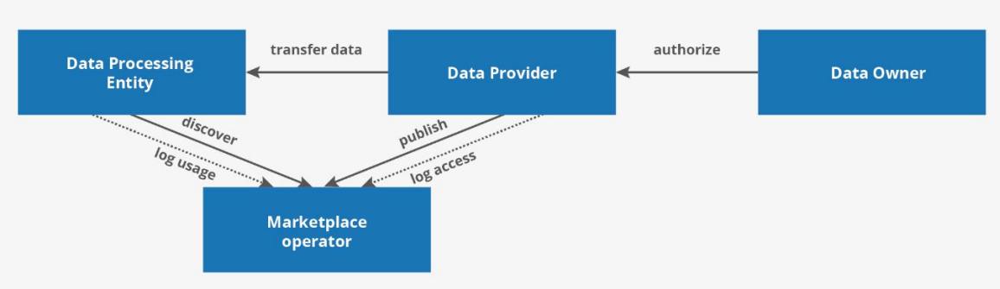
Figuur4.2– OPENDEI actormodel
OPENDEI onderscheidt vier groepen belanghebbenden in data spaces: de eigenaar van de data (‘data owner’), de dataprovider, de dataverwerker (’data processing entity’) en de marktplaats operator. Figuur 4.2 illustreert de relaties en interacties tussen deze belanghebbenden en de datastroom die tussen hen plaatsvindt.
Een data-eigenaar is een entiteit, die de bevoegdheid heeft om te beslissen hoe haar data door derden kunnen worden gebruikt. Afhankelijk van de dienst en oplossing en het bedrijfsmodel dat is opgezet, kan deze entiteit zelf data inwinnen (handmatig of met behulp van systemen) of tools en diensten van derden gebruiken om data te verkrijgen. Data kunnen on-premise, aan de rand (‘edge’) of in de cloud worden opgeslagen. Data-eigenaren kunnen besluiten om hun data privé te houden voor intern gebruik (voor verbetering van eigen processen, creatie van nieuwe bedrijfswaarde voor commercieel voordeel, enz.) of deze openbaar of met een beperkt aantal derden te delen. In het geval dat data in een of andere vorm beschikbaar worden gesteld aan derden (meestal gedaan met de hulp van een dataprovider), omvat dit rechten en plichten (beleid voor datagebruik) en algemene voorwaarden. Data-eigenaren kunnen data gratis beschikbaar stellen aan derden (bijvoorbeeld om wetenschap en innovatie te bevorderen met open data) of tegen betaling aanbieden, afhankelijk van het businessmodel.
Een dataverwerver of dataleverancier is een entiteit die verantwoordelijk is voor het verzamelen en voorbewerken van data en deze namens een dataeigenaar aan anderen verstrekt (vaak als onderdeel van een bedrijfsgerelateerde service die aan een dataeigenaar wordt geleverd). Een bedrijf dat bijvoorbeeld asset monitoring-diensten levert (bijvoorbeeld voor wagenparkbeheer) zet tracking-apparaten in en verzamelt data over de voertuigen van de klant (tijddata, locatiedata, enz.). Hoewel de data worden verzameld, verwerkt en opgeslagen door de dataprovider ten behoeve van de klant (d.w.z. de dataeigenaar), blijft het latere gebruik van de data meestal onder controle van de klant. Onlangs zijn er nieuwe bedrijfsmodellen ontstaan op basis waarvan Data Providers/Acquirers hun diensten tegen gereduceerde prijzen aanbieden in ruil voor de mogelijkheid om de geanonimiseerde data van hun klant te gebruiken om bestaande diensten verder te verbeteren of nieuwe diensten te creëren die nieuwe bedrijfswaarde genereren. De Dataleverancier biedt de Dataeigenaar technische middelen om betrouwbare datauitwisseling en datauitwisseling met andere deelnemers in de data space mogelijk te maken (inclusief monitoring van datagebruik, indien gevraagd).
Een dataverwerker is een entiteit die verantwoordelijk is voor en geïnteresseerd is in het gebruik van bepaalde soorten data om nieuwe diensten te creëren die op de markt worden aangeboden. Het spectrum van dergelijke diensten is zeer breed, variërend van domeinspecifieke use cases tot domeinoverschrijdende applicaties. De waarde van de data die worden gebruikt voor het maken van nieuwe services hangt af van de nauwkeurigheid van de data, de beschikbaarheid (d.w.z. het aantal dataproviders dat deze data aanbiedt) en hoe belangrijk deze zijn voor de gebruikte verwerkingsalgoritmen. Het wordt meestal vooraf geschat en overeengekomen, wat tot op zekere hoogte het vermogen van de dataeigenaar beperkt om maximale monetisatie van zijn data te bereiken, omdat ze geen goed begrip hebben van de extra waarde die bovenop hun data wordt gecreëerd en / of de waarde die de nieuwe services hebben voor gebruikers. Aangezien de controle over het datagebruik is gebaseerd op conventionele contractdocumenten die door de betrokken partijen zijn opgesteld, wat leidt tot afhankelijkheid van handmatige/backoffice-activiteiten, wordt het gebruik van data verder gecompliceerd, waardoor de volledige exploitatie en monetarisering van data wordt vertraagd.
Een Data Marketplace Operator is een entiteit die verschillende soorten infrastructuur levert (bijv. zachte infrastructuur, hardware, tools voor dataverwerking). Bovendien is het verantwoordelijk voor het beheer van de markt door ondersteunende diensten te verlenen, algemene voorwaarden te definiëren en te beslissen over toelating en intrekking van datasets of deelnemers. Naarmate het belang en het potentieel van data steeds meer wordt erkend, ontstaan datamarktplaatsen als een nieuw type bedrijfsaanbod. Hun doel is om datagebruik op een naadloze en geautomatiseerde manier mogelijk te maken, waarbij de noodzaak van gecompliceerde backofficecontracten en -overeenkomsten wordt omzeild. Een datamarktplaats kan domeinoverschrijdend of domeinspecifiek zijn (d.w.z. omgaan met data die van belang zijn voor specifieke use cases en industrieën). Hun belangrijkste taak is om data gemakkelijk vindbaar te maken (op basis van een reeks gestandaardiseerde datamodellen) en om transparante tracking te bieden van alle datagerelateerde transacties (van wie welke data op welk moment heeft gebruikt tot inkomsten die worden gegenereerd uit het delen van data). Exploitanten van datamarktplaatsen moeten mechanismen invoeren om de naleving van het beleid inzake datagebruik te waarborgen (bijvoorbeeld met betrekking tot de tijd en het aantal data waarop de data zijn gebruikt, of toepassingsgebieden waarin bepaalde data niet kunnen worden gebruikt).
Governancemodel
Publiek-private governance is nl. één van de vier hoofdprincipes van OPENDEI. OPENDEI heeft een aanzet gegeven voor een globaal governance model, dat gebaseerd is de EU Data Governance Act. De EU Data Governance Act bevestigt het idee van een governancestructuur die bestaat uit meerdere entiteiten. Voor Europese data spaces wordt aanbevolen om voor elke data space een (domein)autoriteit voor de governance aan te wijzen en een centrale autoriteit te hebben die toezicht houdt op alle aspecten van de data space in verband met de interoperabiliteit van data space, d.w.z. de de facto 'zachte infrastructuur'. Deze centrale autoriteit zal communiceren met alle specifieke autoriteiten voor de afzonderlijke data spaces. Voor deze bestuursstructuur van de zachte infrastructuur moeten overheden op drie niveaus (strategisch, tactisch en operationeel niveau) in nauwe samenhang met elkaar opereren. De EU DGA specificeert de European Data Innovation Board (DIP) als de autoriteit op strategisch niveau. OPENDEI heeft in hoofdstuk 4 van het position paper voorgesteld om eveneens een autoriteit op tactisch en operationeel niveau aan te stellen, de 'Data Exchange Board' (DEB). In de onderstaande figuur 4.3 is deze governancestructuur weergegeven.
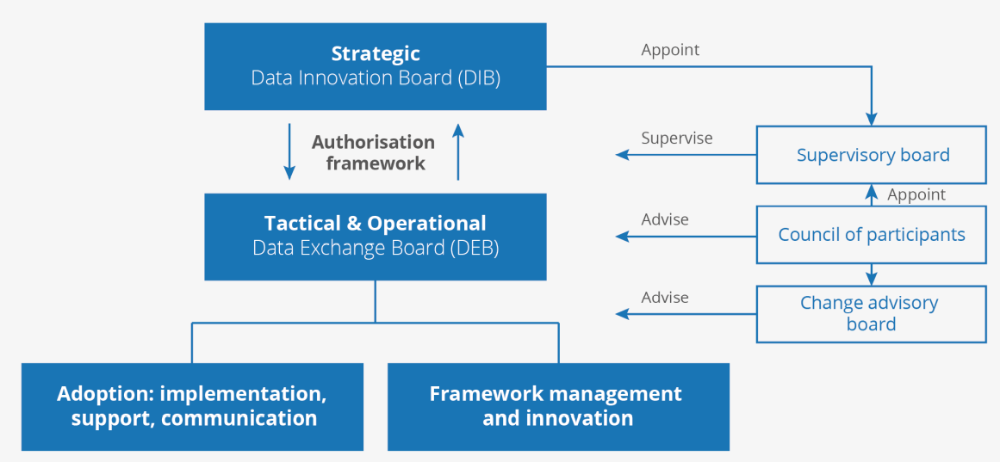
Figuur4.3OPENDEI Governance structuurvoor de zachte infrastructuur
Met deze Act stelt de EU een Data Innovation Board (DIB) in, die adviseert over de werkwijzen in het kader van deze wet, de standaarden, en interoperabiliteit (zie verder Handreiking EU informatie). OpenDEI onderschrijft dit en doet de suggestie om naast de DIB een Data Exchange Board (DEB) in te richten voor data spaces governance. De DEB zal volgens OPENDEI twee hoofdactiviteiten kennen: 1. het verzorgen van het autorisatiekader en 2. het behandelen van alles met betrekking tot Europese data spaces die live en geadopteerd worden (d.w.z. implementatie, ondersteuning, communicatie). De DEB zelf zal een tweeledige structuur hebben. Een centrale rol zal worden gegeven aan de 'Raad van Deelnemers’. Deze raad zou kunnen bestaan uit vertegenwoordigers van gecertificeerde en aanblijvende partijen. De deelnemersraad krijgt het recht om de leden van de Raad van Commissarissen (samen met de DIB) te benoemen. De DEB krijgt eigen personeel. Een deel van dit personeel moet bestaan uit vertegenwoordigers van de bestuursorganisaties van de afzonderlijke data spaces. De organisatie verantwoordelijke voor de governance van elke data space zal een deel van de vertegenwoordigers aanwijzen om de DEB te bemannen. Bovendien kunnen de deelnemers van elke data space vertegenwoordigers sturen naar de Raad van Toezicht, de Raad van Deelnemers en de Change Advisory Board. De organisatiestructuur van de governance-entiteiten van de afzonderlijke data spaces moet vergelijkbaar zijn met deze algemene governancestructuur. OPENDEI adviseert daarmee ook om een strategisch, een tactisch en een operationeel niveau te definiëren voor het bestuur van de afzonderlijke data spaces, waarbij elk niveau wordt gecontroleerd door organisatorische organen die bestaan uit vertegenwoordigers van deelnemende organisaties.
Dataspacedomeinen
OPENDEI heeft tevens voor vier data space domeinen verkent welke specifieke aspecten in deze data spelen van belang zijn. Het gaat om de domein industrie, energie, gezondheid en agri-voedsel.
Naast bovengenoemde onderwerpen, is OPENDEI is actief geweest op verschillende fronten:
Bouwen van data-ecosystemen. Een innovatie- en samenwerkingsplatform mogelijk maken, een Europees netwerk van DIH's smeden, bijdragen aan de catalogus van industriële vaardigheden en waarnemingspost;
Grootschaligedata spacepilots voor industrie, energie, gezondheid en agri-voedsel. Bijdragen aan een digitaal volwassenheidsmodel, het creëren van een reeks beoordelingsmethoden en een benchmarkingtool voor migratietrajecten;
5.3 Synthese
OPENDEI heeft als EU project zich gericht zich op de ondersteuning van data spaces in vier domeinen: industrie (productie), energie, gezondheid, landbouw (agri-food). OpenDEI heeft voor deze domeinen aanwezige referentie-architecturen in beeld gebracht. In het position paper ‘Design principle’ heeft OPENDEI globaal inzicht gegeven in belangerijke bouwstenen voor data spaces. De bouwstenen zijn globaal en functioneel beschreven naar governance, interoperabiliteit, vertrouwen en data waarde. Een gedetailleerde uitwerking van deze bouwstenen is niet gegeven. Enkel de uitwerking van het maken van business model en value cases voor de domeinen alsook het aanzet voor het maken van een governance model en actorenmodel worden als focusgebied benoemd. De uitwerking van . Vandaar dat deze elementen als focusgebieden in de onderstaande figuur 4.4) zijn uitgelicht.
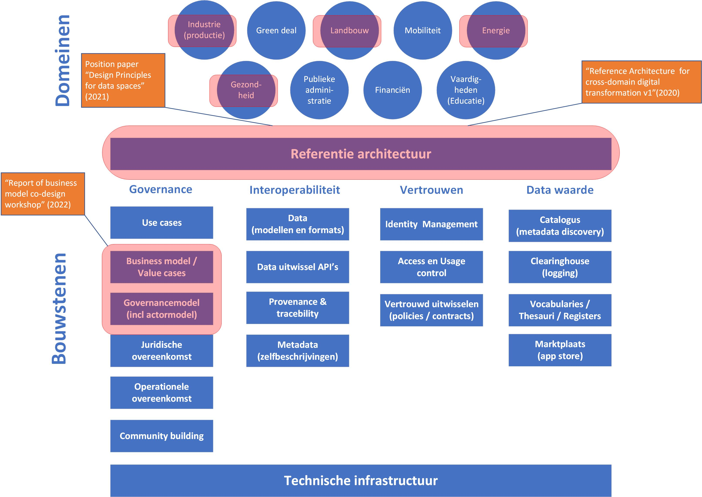
Figuur4.4– Focusgebieden van OPENDEI
6. Data sharing coalition
6.1 Inleiding
Er bestaan verschillende initiatieven voor het delen van data en deze zijn vaak gericht op een specifieke sector of domein. De Data Sharing Coalition wil voortbouwen op bestaande initiatieven voor het delen van data om ze te versterken bij het ontsluiten van de waarde van het delen van data in en over hun domein. De Data Sharing Coalition heeft tot doel het cross-domein data delen onder controle van de rechthebbende partij te stimuleren, door interoperabiliteit tussen domeinen mogelijk te maken. De Data Sharing Coalition is een internationaal initiatief waarin een grote verscheidenheid aan organisaties samenwerkt om
data delen tussen bestaande data spaces mogelijk te maken. Door interoperabiliteit mogelijk te maken tussen bestaande en toekomstige data spaces met datasoevereiniteit als kernprincipe, kunnen partijen uit verschillende sectoren en domeinen eenvoudig data met elkaar delen, waardoor aanzienlijke economische en maatschappelijke waarde wordt ontsloten. De Data Sharing Coalition realiseert daarvoor verschillende cross-domein use cases. In deze use cases definiëren en realiseren organisaties uit verschillende domeinen samen een use case die nieuwe waarde realiseert dankzij (cross-sectoraal) data delen.
De coalitie is in januari 2020 gestart met steun van het Ministerie van Economische Zaken en Klimaat in Nederland. De verwachte levensduur van de projectfase van de coalitie is tot 2025. Tegen 2025 zal de Data Sharing Coalition naar verwachting haar resultaten en activiteiten hebben overgedragen aan een entiteit, die een Trust Framework exploiteert en beheert dat cross-domein data delen faciliteert. De eerste fase van de Data Sharing Coalition is een onderzoek naar het harmonisatiepotentieel om domeinoverstijgend data delen mogelijk te maken. Dat is uiteengezet in de Data Sharing Canvas, waarin de onderdelen van het cross-domein data delen zijn benoemd.
6.2 Data sharing canvas
De Data Sharing Coalition heeft momenteel twee duidelijke focusgebieden: de ontwikkeling van het Data Sharing Canvas als een soort van referentie architectuur voor het delen van data en de onderbouwing daarvan met de inzichten en ervaringen uit use cases.
Het Data Sharing Canvas is het conceptueel model voor het realiseren van een “trust framework for cross-domain data sharing” [DSC-DSC]. Het Data Sharing Canvas is bedoeld geeft een overzicht en indicatie van de onderwerpen nodig voor data delen en hun implicaties. Het Canvas heeft niet tot doel uitputtend te zijn of in detail invulling te geven aan deze onderwerpen. Het Data Sharing Canvas vormt ook de globale leidraad voor toekomstige werkzaamheden van de Data Sharing Coalition, maar biedt vooralsnog geen houvast voor bindende overeenkomsten of (technische) vereisten voor data delen. Daarvoor voorziet DSC een taak voor het nog te realiseren DSC vertrouwenskader (‘trust framework’). Aan de hand van een BLOFT model wordt het DSC ‘trust framework’ beschreven. Het BLOFT model is in figuur 5.1 weergegeven.
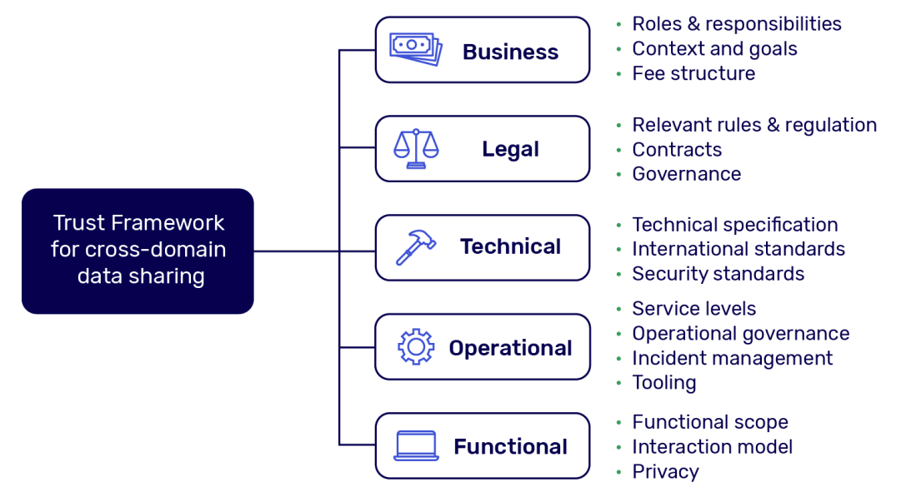
Figuur5.1 –BLOFT model voor DSCvertrouwenskader
Het Data Sharing Canvas is het huidige conceptuele kader, dat input geeeft aan de Blueprint en het uiteindelijke DSC Vertrouwenskader. In de Data Sharing Canvas zijn daarvoor de principes voor data delen uiteengezet, evenals de belangrijke concepten en onderwerpen. De onderwerpen zijn globaal en conceptueel beschreven naar leidende principes, concepten (en actoren), harmonisatie via het ‘proxy model’ en de specifieke aandacht voor de volgende onderwerpen: termen en condities, identificatie-autorisatie-authenticatie (IAA), wettelijke aspecten, informatiebeveiliging, data uitwisseling, operationele overeenkomsten, business modellen en besturing (‘governance’), data standaarden en metadata. Deze onderwerpen worden vnl. conceptueel toegelicht.
Een belangrijke rol is wegggelegd voor het Proxy model; een concept vergelijkbaar met de IDS data connector, die het mogelijk moet maken om het data delen tussen een vragen en aanbieder van het ene domein met het andere domein te verbinden. Om interoperabiliteit tussen domeinen en toekomstige schaalbaarheid mogelijk te maken, heeft elk domein volgens DSC nl. een proxy nodig. Proxy’s zijn systemen, die door elk domein moeten worden gebruikt met de functie van vertaling tussen domeinspecifieke specificaties en gemeenschappelijke, geharmoniseerde inter-domeinspecificaties. Dit is nodig om interoperabiliteit en vertrouwen tussen domeinen te bereiken. In figuur 5.2 is het proxy concept van DSC weergegeven. Dit (actor)model geeft tevens weer welke actoren in scope zijn van DSC. Met de domeinproxy zijn vier actoren binnen het toepassingsgebied van de UCIG: de Data Service Provider, de Data Service Consumer, de Rechthebbende en Domain Proxies. De data service provider wordt gedefinieerd als de actor, die een data service aanbiedt aan de consument van de data service. In het use case archetype, beschreven in de UCIG [DSC-UCIG], mag de data service provider de data service alleen leveren wanneer de rechthebbende partij expliciet toestemming heeft gegeven. De data service provider definieert de datadienst en de bijbehorende algemene voorwaarden. Een Data Service Consument wordt gedefinieerd als de actor die gebruikmaakt van een data service, die wordt aangeboden door de data service provider. De consument dient kennis te nemen van de data service aangeboden door de provider en zijn algemene voorwaarden te accepteren voordat de consumet de data service kan initiëren. De ‘rechthebbende’ wordt gedefinieerd als de entiteit, die rechten heeft op data. De Rechthebbende keurt de data service goed, waardoor de data waarop zij rechten hebben, kunnen worden gedeeld door de provider aan de consumer.
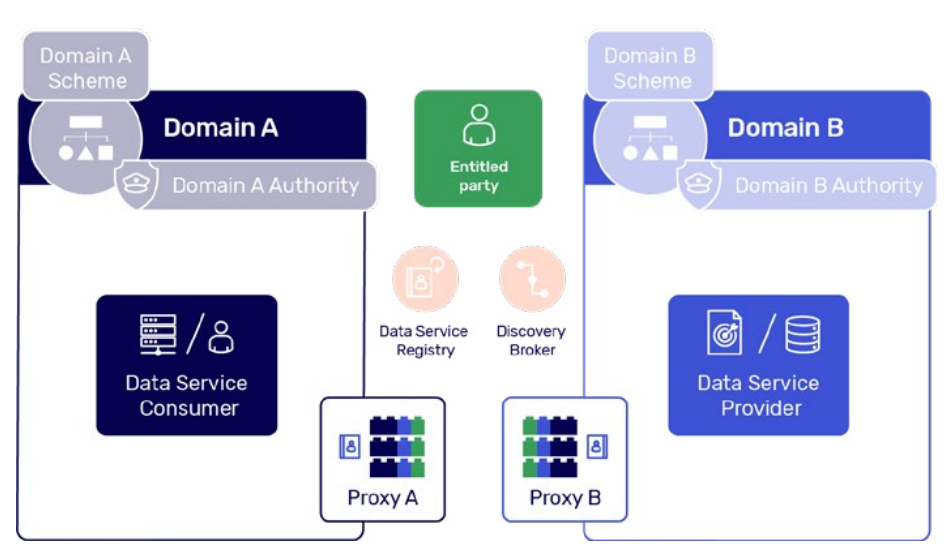
Figuur 5.2 Proxy als intermediar tusssen data service consumer en provider
(bron:[[DSC-UCIG]])
In de toekomst zal het Data Sharing Canvas verder worden onderbouwd met inzichten, die zijn afgeleid van praktische use cases voor het delen van gegevens die de Data Sharing Coalition heeft gerealiseerd. Het Data Sharing Canvas legt de basis voor een zachte infrastructuur om data te delen tussen sectoren, die Data Sharing Coalition in 2025 willen leveren. Deze infrastructuur verlaagt drempels voor organisaties die data willen delen om vertrouwen en technische interoperabiliteit tot stand te brengen met hun partners voor het delen van data.
De Data Sharing Coalition biedt naast de Data Sharing Canvas een een evidente methode om een data space opzetten; het maken van een use case voor data delen. Daarvoor heeft de DSC drie ondersteunende methoden ontwikkeld. Het begint met het toepassen van de “Use case playbook”. Dit is de ‘kickstarter’ of het draaiboek voor een data space initiatief. Dit draaiboek versnelt nieuwe use cases voor het delen van data doordat het stapsgewijze aanpak biedt voor het genereren, beoordelen en realiseren van de data space (vanuit het idee of eerste initiatief). Het begeleidt de gebruiker door de verschillende stappen, zoals het vaststellen van de context en scope, de waardebepaling, complexiteit van interacties en uiteindelijke vaststelling om tot realisatie over te gaan. De focus van dit draaiboek is om een uitgebreid en gestructureerd proces te bieden om de use case voor het data delen te ontwikkelen. Het draaiboek introduceert vijf stappen van use case-ontwikkeling en geeft een concrete doelstelling, aanpak en middelen voor elke stap. Voor verschillende stappen, die in chronologische volgorde worden doorlopen, worden ter ondersteuning sjablonen verstrekt.
Als tweede stap van de use case-ontwikkeling, biedt de Blueprint een uitwerking van het Data Sharing Canvas een praktische, bruikbare aanpak voor het starten van de ontwikkeling van een data space [DSC-UCBP]. De blueprint behandeld alle relevante onderwerpen en inzichten uit het Data Sharing Canvas en biedt een goede startpositie voor het realiseren van een data space. Daarvoor wordt in drie fasen inzichtelijk gemaakt welke ontwerpkeuzes gemaakt worden voor de relevante onderwerpen. Deze fasen zijn: .
Reikwijdte en ambitie. Waarom wilt u het delen van data mogelijk maken en hoe profiteert u hiervan? Relevante onderwerpen om te bespreken zijn: context & doel, leidende principes en functionele scoping.
Ontwikkel de overeenkomsten die nodig zijn om de benodigde functionaliteiten mogelijk te maken. Relevante onderwerpen om te bespreken zijn: Zakelijke onderwerpen (bijv. tariefstructuren), juridische onderwerpen (bijv. governance), operationele onderwerpen (bijv. risicobeheer), functionele onderwerpen (bijv. gebruikerservaring) en technische onderwerpen (bijv. technische specificaties).
Bepaal de vereiste functionaliteiten om uw use case mogelijk te maken. De relevante onderwerpen om te bespreken zijn: rollen en verantwoordelijkheden, functionele componenten en het interactiemodel.
Tenslotte, is geeft de Use Case Implementation Guide [DSC-UCIG] de laatste zet.
Het zal domeinen informeren, inspireren en versnellen in het delen van data en hen ondersteunen bij het opzetten van activiteiten voor het delen van data. De Implementation Guide is gebaseerd op open standaarden en afgestemd op bestaande standaarden en implementaties voor het delen van data. Daartoe geeft de Implementation Guide een overzicht en uitleg over hoe enkele principes van het International Data Spaces Association (IDSA) en het vertrouwenskader iSHARE kunnen worden toegepast voor de implementatie van een DSC data space. Daarvoor in de UCIG concepten van actoren en rollen geleend van IDSA en voor het vertrouwd uitwisselen van data zijn bijvoorbeeld elementen geleend van iSHARE, zoals machine-to-machine authenticatie en de OAuth flow. Om zich voor te bereiden op toekomstige interoperabiliteit zijn de eisen in de UCIG zoveel mogelijk gebaseerd op de iSHARE-implementatie en -infrastructuur, waarbij wordt afgestemd op de specifieke context van de UCIG. iSHARE wordt verder toegelicht in hoofdstuk 6.
Het DSC Vertrouwenskader voor het delen van data tussen domeinen is de reeks overeenkomsten die interoperabele, domeinoverschrijdende gegevensuitwisseling mogelijk maken in het kader van de governance van de coalitie voor gegevensdeling. Het DSC Vertrouwenskader is aangekondigd, maar vooralsnog niet beschikbaar.
6.3 Synthese
Het Data Sharing Coalition initiatief is Nederlands initiatief met een internationale focus. DSC richt zich op cross-domein data delen tussen data spaces.
DSC heeft voor cross-domein data delen een referentie architectuur ontwikkeld, genaamd het Data Sharing Canvas. Het Data Sharing Canvas is een belangrijk focusgebied van DSC en geeft globaal inzicht in de belangrijke onderwerpen voor data delen. Dit zijn de onderwerpen die nader uitgewerkt gaan worden in het aangekondigde DSC vertrouwenskader. Een gedetailleerde uitwerking van deze bouwstenen om implementatie van de bouwstenen mogelijk te maken is nog niet voorhanden. DSC heeft daarentegen veel aandacht besteed aan de implementatie van use cases en value cases. De Blueprint helpt organisaties om de Data Sharing Canvas toe te passen voor opzetten van een use case voor data delen. De uitwerking van DSC richting implementatie komt terug in de Use Case Implementation Guide. De Implementatie Guide maakt gebruik van de actormodel van IDSA en de implementatieconcepten van iSHARE als vertrouwenskader. De ontwikkeling van use cases en de value case kan gerust als focusgebied van DSC worden benoemd. Vandaar dat deze elementen als focusgebieden in de onderstaande figuur 5.3) zijn uitgelicht.
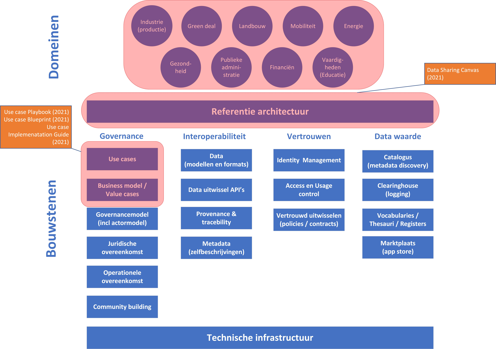
Figuur5.3– Focusgebieden vanDataSharingCoalition
Tenslotte heeft de Data Sharing Coalition een position paper ontwikkeld [DSC-PP], waarin de samenwerking en relatie van DSC met de andere data space initiatieven is geschetst. Dit position paper is mede leidraad geweest voor de analyse uitgevoerd in onderhavige verkenning.
7. De Europese geo-informatie infrastructuur
Dit hoofdstuk beschrijft en introduceert de het gebruik van de het concept ‘dataspace’ vanuit het perspectief van deEuropeseGeo-Informatie Infrastructuur (NGII). We belichten het ‘data fundament’, de afspraken over standaarden voor interoperabiliteit, de bouwstenen en voorzieningen in deEuropsegeo-informatie infrastructuur,dieinde afgelopen 15 jaar is gerealiseerd op basis van de Europese INSPIRE Richtlijn.
7.1 De Europese geo-informatie infrastructuur (INSPIRE)
Eén van de meest onbekende, maar inmiddels geïmplementeerde data spaces in de Europese Unie, is de Europese geo-informatie infrastructuur die tot stand is gekomen na de invoering van de Europese INSPIRE Richtijn in 2007. In Nederland bekend als de INSPIRE Wet. In het kader van INSPIRE zijn vanuit Nederland op gestandaardiseerde en geharmoniseerde wijze zo’n 200 nationale datasets beschikbaar gesteld aan de Europese geo-informatie infrastructuur. Deze datasets zijn vindbaar, bekijkbaar (metadata en viewservice) en downloadbaar (directe download en indirecte bulkdownload). De data is in Nederland vindbaar in het nationaal georegister dat tevens fungeert als nationaal toegangspunt voor het EU geoportaal. Het Europese geoportaal is de centrale catalogus waar alle lidstaten hun data producten (datasets en netwerkdiensten) voor de Europese geo-informatie infrastructuur kenbaar maken.
De Europese richtlijn INSPIRE verbetert de beschikbaarheid, kwaliteit, toegang tot en uitwisseling van plaatsgebonden gegevens over het milieu in Europa. Denk aan gegevens als de locatie van administratieve grenzen, watersystemen, landbouw, industrie en vervoersnetwerken en de geografische spreiding van luchtkwaliteit en geluid, maar ook van bevolking, plant- en diersoorten en de gezondheid op een locatie. INSPIRE verplicht de publieke dataproviders in de 27 Europese lidstaten om plaatsgebonden gegevens over 34 milieu thema’s digitaal vindbaar, bruikbaar en uitwisselbaar te maken. Om dit mogelijk te maken worden de gegevens gestandaardiseerd beschikbaar gemaakt, zodat de gegevens binnen en tussen lidstaten naadloos aansluiten en eenzelfde, begrijpelijke taal spreken. Daarmee ontstaat een netwerk van diensten of services op het Internet, waarmee openbare locatiegebonden gegevens veel beter, uniformer en begrijpelijker toegankelijk worden voor overheid, burgers en bedrijven.
De INSPIRE principes
INSPIRE is bedoeld om op kwalitatief hoogwaardige wijze milieudata vrij beschikbaar te stellen via het Internet, zowel voor de overheid als voor burgers en bedrijven;
INSPIRE is een geografische informatie infrastructuur voor het delen van milieudata op basis van een omvangrijke set van standaardisatie afspraken voor geo-informatie uitwisseling;
De infrastructuur gedachte gaat uit van het eenmalig verzamelen en opslaan (bij de bron) en het via de locatie kunnen combineren van verschillende milieudatasets uit meerdere bronnen naar de vele gebruikers en hun toepassingen;
INSPIRE gaat niet over het inwinnen van milieudata. INSPIRE vraagt publieke organisaties om aanwezige data beschikbaar te stellen in een uniforme structuur. Het is ook niet noodzakelijk voor INSPIRE gegevens te verzamelen;
De milieudata is eenvoudig vindbaar en het is duidelijk hoe de data kan worden gebruikt ten behoeve van een bepaald gebruiksdoel en onder welke condities en gebruiksvoorwaarden de data worden beschikbaar gesteld;
De methode INSPIRE werkt met en op internationale open standaarden aangaande de 3 bouwstenen: 1. diensten in de vorm van web services, 2. informatiemodellen voor uniforme data en 3. metadata voor zowel de services als datasets;
INSPIRE is functioneel simpel en 3-ledig. De gebruiker kan milieudata 1. zoeken, 2. bekijken en 3. downloaden en aanroepen;
INSPIRE biedt afspraken over het beperken van de toegang tot milieudata. Voor EU instellingen zijn nog specifieke regels opgesteld.
De INSPIRE functie
Voor gebruikers heeft INSPIRE een vrij overzichtelijke opzet (zie figuur 8.5) en is INSPIRE functioneel simpel gehouden met 3 functies: zoeken - bekijken – downloaden en aanroepen. Dit staat ook wel bekend als het publish-find-bind principe van service oriented architectuur. De gebruiker kan de milieudata zoeken via de zoekdienst (discovery service), zoals het nationaal georegister, het EU portaal of een eigen applicatie. De gebruiker evalueert de geschiktheid van de milieudata op basis van de eigenschappen van de dataset (metadata) en/of door het bekijken van de dataset in kaartvorm (view service). Indien de gebruiker de data geschikt acht voor haar gebruiksdoel, wordt de data gedownload voor gebruik (download service), of aangeroepen als ruimtelijke datadienst (spatial data service). De ruimtelijke datadienst maakt een meer specifieke bevraging op de dataset mogelijk (bijv. geocodering van een adres, een berekening tussen twee punten, etc.). De gebruiker krijgt toegang tot de data via zijn eigen bedrijfsapplicatie(s). De bedrijfsapplicaties moeten daarvoor wel geschikt zijn, d.w.z. de INSPIRE standaarden ondersteunen.
Voor data providers is de architectuur complexer, met name door de data transformaties (bijv. coördinaatstelsel- en datamodeltransformaties), die uitgevoerd moeten worden om INSPIRE compliant data te leveren. Tevens zijn - naast het nationaal georegister - ook enkele generieke, ondersteunende voorzieningen nodig, zoals een namespace register.
De INSPIRE methode
De INSPIRE methode bestaat uit een set van formele afspraken – het kwaliteitsraamwerk - omtrent diverse aspecten van de geo-informatie infrastructuur (zie figuur 8.6).
De volgende afspraken maken deel uit van het gehele kwaliteitsraamwerk:
Formele afspraken over scope, te hanteren begrippen, generiek conceptueel model voor datamodellen, methodologie, technische architectuur en standaarden, en data encoding;
Formele afspraken over hoe data uniform beschreven moet worden tussen organisaties in verschillende lidstaten (o.a. tot in details uitgewerkte modelleer conventies voor opstellen van informatiemodellen, applicatie schema’s en uitwisselformaten), die worden toegepast t.b.v. data product specificaties voor 34 thema’s;
Formele afspraken over functionaliteit voor het uitwisselen van data via principes van service oriented architecturen en gestandaardiseerde service interfaces;
De (kwaliteits)beschrijving van datasets en services met metadata, zodat het zoeken-raadplegen-downloaden en aanroepen adagium van service georiënteerde architecturen wordt ondersteund;
De mogelijkheid voor conformiteitstoetsing t.b.v. EU rapportages op basis van Abstracte test Suites.
INSPIRE kent een aanpak met gedistribueerde verantwoordelijkheden en in combinatie enkele generieke, centrale voorzieningen, m.n. registers;
INSPIRE kent een aanpak van abstracte modellen en richtlijnen en uitgewerkte concrete (technische) handleidingen;
Deze formele afspraken zijn/worden door de stakeholders (gebruikers en data providers) zelf opgesteld. Draagvlak wordt daarmee verkregen en inhoudelijke discussies over content, modellen en standaarden beslecht;
Daarbij kent INSPIRE een implementatie roadmap.
7.2 Synthese INSPIRE
De Europese geo-informatie infrastructuur is als data space tot stand gekomen als het geheel van afspraken vastgelegd in wetgevende en technische documenten. In figuur 8.7 zijn de focusgebieden weergegeven, die van belang zijn geweest bij de totstandkoming van de Europese geo-informatie infrastructuur ofwel de geo-informatie data space op basis van het gehele wettelijke INSPIRE raamwerk. Dat lichten we hier kort toe.
Formele afspraken over hoe data uniform beschreven moet worden tussen organisaties in verschillende lidstaten (o.a. tot in details uitgewerkte modelleer conventies voor opstellen van informatiemodellen, applicatie schema’s en uitwisselformaten), die worden toegepast t.b.v. data product specificaties voor 34 thema’s. Deze thema’s zijn hier te vinden.
Afspraken over data interoperabiliteit: scope, te hanteren begrippen, generiek conceptueel model voor datamodellen, methodologie, technische architectuur en standaarden, en data encoding;
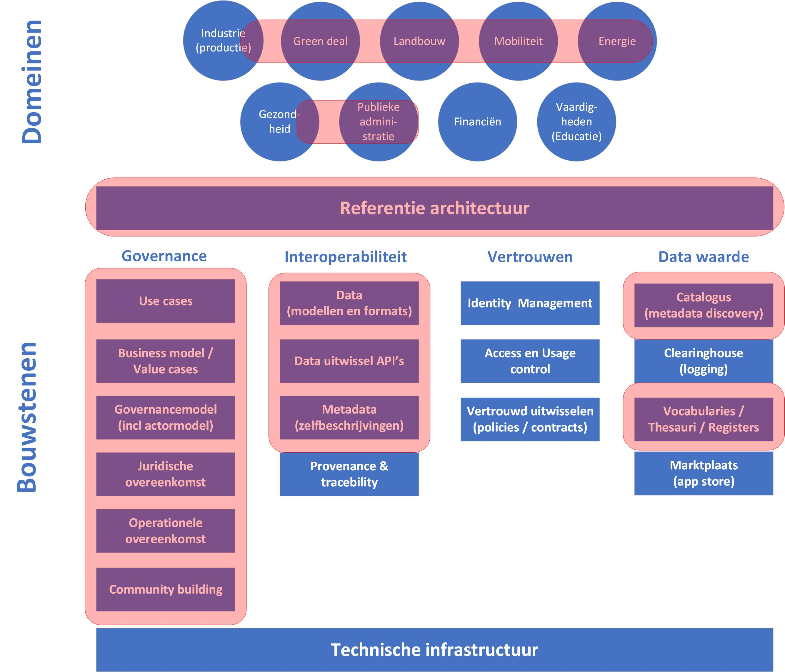
Figuur8.7-Focusgebieden INSPIRE als dataspaceinitiatief
INSPIRE beschrijft in technische uitvoeringsregels hoe de data uitwissel API’s moeten worden ingericht. Deze formele afspraken over functionaliteit voor het uitwisselen van data via principes van service oriented architecturen en gestandaardiseerde service interfaces zijn uitvoerig vastgelegd. Ook is een (kwaliteits)beschrijving van datasets en services met metadata ontwikkeld, zodat het zoeken-raadplegen-downloaden en aanroepen adagium van service georiënteerde architecturen wordt ondersteund. Daarbij is de mogelijkheid aanwezig voor conformiteitstoetsing t.b.v. EU rapportages op basis van Abstracte Test Suites.
Om datasets vindbaar te maken kent INSPIRE een aanpak met gedistribueerde verantwoordelijkheden in combinatie enkele (de)centrale voorzieningen: metadata catalogi (vindvoorziening via geoportals) en zijn diverse ondersteunende Europese en nationale registers opgezet (woordenboeken/vocabularies, CRS register).
Daarbij ging de invoering van INSPIRE gepaard met een implementatie roadmap en governance structuur. De afspraken zijn door de stakeholders in de EU opgesteld. Draagvlak wordt daarmee verkregen en inhoudelijke discussies over content, modellen en standaarden beslecht (use cases, business models en community building). De implementatie is overgelaten aan de lidstaten en publieke organisaties in de lidstaten.
INSPIRE stelt nadrukkelijk geen eisen aan Identity en Acces Management en schrijft geen contracten en/of policies voor behalve het kenbaar maken daarvan in de metadata. De EC is zelf hoeder van de data space via het wettelijke kader en beheert enkele generieke voorzieningen zoals de catalogus (EU geoportal) en diverse registers (woordenboek).
7.3 De Europese data strategie en ‘common data spaces’
Over de totstandkoming en realisatie van de Europese geo-informatie infrastructuur is onlangs een evaluatie verschenen. Na deze evaluatie van de INSPIRE richtlijn, wordt deze herzien. Dit zal in nauwe samenhang zijn met de nieuw voor te stellen GreenData4All richtlijn.
De GreenData4All richtlijn moet het makkelijker maken om data te delen tussen publieke en private partijen en met het algemeen publiek. Dit moet datagedreven innovatie en evidence-based besluitvorming ondersteunen. De GreenData4All gerelateerde data zal zijn plek gaan krijgen in de Green Deal data space.
In het kader van de Europese Digitale Strategie en de Data Strategie zijn verschillende voorstellen voor wetgeving gedaan. Wij volgen deze Europese ontwikkelingen rondom wetgeving en houden deze bij in een Handreiking EU Informatie. De wetgevende en regulerende aspecten werken in op de implementatie van data spaces. Zo is eind februari 2022 het voorstel voor de Data Act (Data verordening) gepubliceerd, de laatste grote bouwsteen die nog ontbrak in de Europese data strategie. De Data Act regelt recht op datatoegang voor consumenten, stelt regels over datadelen, het voorkomen van oneerlijke contractafspraken, dataportabiliteit tussen dienstverleners, interoperabiliteit tussen data spaces en diensten en het door overheden verkrijgen en gebruiken van data van bedrijven. Het geeft de mogelijkheid aan de Europese Commissie om additionele wetten te formuleren voor interoperabiliteit en standaarden.
De negen initiële gemeenschappelijke Europese data spaces zijn de volgende (zie figuur 1.1):
1. Een industriële data space, ter ondersteuning van het concurrentievermogen en de prestaties van de EU-industrie;
2. Een Green Deal data space, om het grote potentieel van data te gebruiken ter ondersteuning van de prioritaire acties van de Green Deal op het gebied van onderwerpen als klimaatverandering, circulaire economie, milieuvervuiling, biodiversiteit en ontbossing;
3. Een mobiliteitsdata space, om Europa in de voorhoede te plaatsen bij de ontwikkeling van een intelligent vervoerssysteem;
4. Een ruimte voor gezondheidsdata, essentieel voor vooruitgang bij het voorkomen, opsporen en behandelen van ziekten en voor geïnformeerde, op feiten gebaseerde beslissingen om de gezondheidszorgstelsels te verbeteren;
5. Een financiële data space om innovatie, markttransparantie, duurzame financiering, evenals toegang tot financiering voor Europese bedrijven en een meer geïntegreerde markt te stimuleren;
6. Een energie data space, om een sterkere beschikbaarheid en sectoroverschrijdend delen van data te bevorderen, op een klantgerichte, veilige en betrouwbare manier;
7. Een landbouw data space, om de duurzaamheidsprestaties en het concurrentievermogen van de landbouwsector te verbeteren door de verwerking en analyse van data;
8. Data spacen voor overheidsdiensten, om de transparantie en verantwoording van de overheidsuitgaven en de kwaliteit van de uitgaven te verbeteren, corruptie te bestrijden, zowel op EU- als op nationaal niveau;
9. Een data space voor vaardigheden om de discrepanties tussen de onderwijs- en opleidingsstelsels en de behoeften van de arbeidsmarkt te verkleinen.
Wij volgen de totstandkoming van de green deal data space actief en zullen we ook de ontwikkeling in de al genoemde Handreiking EU Informatie bijhouden. De ontwikkelingen zijn volop gaande om de green deal data space vorm te geven. Er is momenteel nog onvoldoende informatie over hoe de green deal data space er uit komt te zien. Het is derhalve nog te vroeg om de beschouwingsgebieden van de green deal dataspace eenduidig te typeren en aan te wijzen.
De rol van initiatieven voor federatief data delen raakt steeds meer verweven met het bredere perspectief op de internationale ontwikkelingen in het kader van de Europese Data Strategie en de bijbehorende Europese initiatieven voor de ontwikkeling van referentiearchitectuur. Daarom vormt dit bredere perspectief op federatieve data delen en data spaces een belangrijk onderdeel van deze verkenning, waarin drie verschillende perspectieven vanuit het OpenDEI model worden behandeld: het perspectief van governance, interoperabiliteit, vertrouwen en data waarde.
8. De Nationale geo-informatie infrastructuur
Dit hoofdstuk beschrijft en introduceert de het gebruik van de het concept ‘dataspace’ vanuit het perspectief van deNationaleGeo-Informatie Infrastructuur (NGII). We belichten het ‘data fundament’, de afspraken over standaarden voor interoperabiliteit, de bouwstenen en voorzieningen in de nationalegeo-informatie infrastructuur. Tevens lichten we de Europese variant daarvan toe, die de afgelopen 15 jaar is gerealiseerd op basis van de Europese INSPIRE Richtlijn.
8.1 De nationale geo-informatie infrastructuur
De geo-informatie infrastructuur is eigenlijk een internationaal concept, dat in de loop van de jaren invulling heeft gekregen in Nederland via wetgeving, afspraken en governance, standaardisatie en implementatie van centrale en decentrale voorzieningen en data platforms in vooral publieke organisaties.
Het ministerie van Binnenlandse zaken, verantwoordelijk voor de nationale geo-informatie infrastructuur, ziet de NGII als een datafundament onder de maatschappelijke opgaven, en sectoren die er gebruik van maken [GeoInfo]. De NGII bestaat allereerst uit de dingen, die het moeten doen: dataverzamelingen, voorzieningen en de werkprocessen om deze op orde te houden (blauwe blokken in de figuur 8.1). Daaronder de zaken die voorwaardenscheppend zijn: afspraken en standaarden om tot een samenhangend geheel te komen, governance om de gezamenlijke afspraken ook te kunnen maken, financiering om realisatie, beheer en onderhoud mogelijk te maken, en wet- en regelgeving om de hoofdlijnen vast te leggen op een manier die partijen bindt. In de pijl links het verbindende verhaal en rechts de sturing op het geheel.
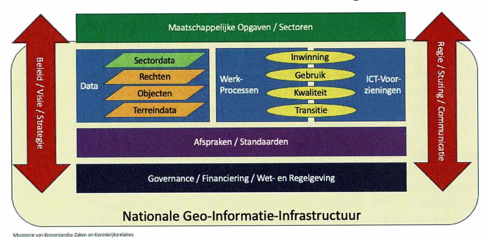
Figuur 8.1 – Nationalegeo-informatie infrastructuur (bron:[[Geo-Info]])
De Nationale Geo-informatie Infrastructuur (NGII) omvat de geo-basisregistraties, voorzieningen als PDOK, en afspraken en standaarden, die in een aantal gevallen wettelijk geregeld zijn. Een aantal registraties die niet de status van basisregistratie hebben maar wel breed worden gebruikt, zouden hier ook toe gerekend kunnen worden. Daarvoor is onlangs een beleidsvisie opgesteld om te komen tot een nationaal geo-datafundament (zie verder paragraaf 8.3). Er is echter geen heldere begrenzing van de NGII afgesproken; de geo-basisregistraties vallen zowel onder de NGII als de GDI (zie hoofdstuk 7). Gebruikers sluiten aan op beide infrastructuren – zowel NGII als GDI - en gebruiken data uit deze basisregistraties voor uiteenlopende use cases. Gebruikers participeren actief in het richting geven aan de infrastructurele registraties en voorzieningen, dragen bij in de financiering, en leveren ook vaak een inhoudelijke bijdrage, bijvoorbeeld in de rol van data eigenaar en dataprovider door het doen van terugmeldingen aan de basisregistraties.
De NGII als publieke infrastructuur wordt bestuurd vanuit het Ministerie van Economische zaken en Koninkrijksrelaties. De huidige minister van Volkshuisvesting en Woningbouw is verantwoordelijk voor de geo-informatie en het geo-informatie beleid. Het GI-Beraad, waarin alle publieke partijen zijn vertegenwoordigd (diverse rijksoverheden, provinciale en lokale overheden), is het belangrijkste adviesorgaan voor de verantwoordelijk minister. Het beleid van de NGII is vastgelegd in Geosamen, een gezamenlijk initiatief van overheid, bedrijfsleven en onderzoeks- en onderwijsinstellingen. De bedrijven zijn vertegenwoordigd via branchevereniging Geobusiness NL en de onderzoeks- en onderwijsinstellingen door het Nederlands Centrum voor Geodesie en Geo-Informatica (het NCG).
Ook onderdeel van de NGII is de wet- en regelgeving. Geo-informatie op verschillende wijze in wetgeving verankerd. Voor de NGII is de Europese INSPIRE Wet (zie verder paragraaf 8.4) richtinggevend geweest (de basisregistraties we ) voor de inrichting van de NGII, met voorschriften voor het gestandaardiseerd ontsluiten van allerlei geo-informatie voor milieutoepassingen (data, netwerkdiensten en metadata). Dat heeft er mede toe geleid, dat in 2007 het nationaal georegister is opgezet, waarin inmiddels meer dan 8000 datasets zijn geregistreerd om de toegang tot publieke geo-informatie te verbeteren. Daarvoor zorgen diverse datavoorzieningen, zoals PDOK bij het Kadaster en het satellietdata portaal van het Netherlands Space Office (NSO).
Ook de geo-informatie standaardisatie in de publieke sector is goed belegd en toegekend aan een onafhankelijke kennisinstelling (Stichting Geonovum) en voor de specifieke Nederlandse geodetische infrastructuur bij de Nederlandse Samenwerking Geodetische Infrastructuur (NSGI). De aandacht voor het juiste gebruik van coördinaatreferentiesystemen in geo-informatie(systemen) is belegd bij het Kadaster (als beheerder van Rijksdriehoeksmeting), Rijkswaterstaat (als beheerder van Normaal Amsterdams Peil) en de Hydrografische Dienst (primair gericht op het mariene deel van Nederland).
8.2 Synthese NGII
In de afgelopen 15 jaar is de nationale geo-informatie infrastructuur als ecosysteem van vele partijen ontstaan en heeft dat geleid tot afspraken over allerlei aspecten over het delen van geo-informatie: vele dataproducten, de geobasisregistraties, met API’s voor ontsluiting, catalogi voor vindbaarheid en standaarden voor interoperabiliteit, al dan niet vastgelegd in wetgeving. Ook governance is ingericht. In figuur 8.2 zijn de verschillende beschouwingsgebieden van de NGII als data space initiatief weergegeven.
De NGII heeft een cross-domein perspectief, zonder binding aan een bepaald toepassingsdomein maar aan diverse domeinen, waarin de geografische weerslag van actoren, objecten, activiteiten en systemen een rol spelen. De werking en toepassing van de NGII zijn terug te zien in de uiteenlopende toepassingsdomeinen. Het gaat om gebruik in allerlei domeinen, zoals beheer en onderhoud van infrastructuur, watermanagement, mobiliteit, natuurbescherming, energietransitie, industrie, ruimtelijke ordening, woningbouw, landbouw, belastingen en publieke administratie.
Een eenduidige beschrijving van wat de Nationale Geo-Informatie Infrastructuur (NGII) is, is eigenlijk niet beschikbaar. De NGII heeft bijvoorbeeld geen uniforme referentie architectuur, waarin de samenhang van de onderliggende bouwstenen is beschreven.
In 2020 heeft het NGII een ‘businessmodel’ gekregen met het rapport ‘Netherlands geolocation economy report’ [BZK-GeoL]. Dit rapport geeft inzicht in de Nederlandse geo-dataeconomie en de impact die deze geo-data heeft op de economie. Het rapport gaat in op vier onderwerpen:
1. Ontwikkeling van een nationale strategie voor geospatiale infrastructuur;
3. Stimuleer onderzoeks-en onderwijsinstellingen en betrokkenheid met de industrie;
4. Internationale samenwerking en geospatiale hub;
Het rapport geeft een kort overzicht van enige geo-data technologieën en de voordelen van gebruik. Dit wordt gevolgd met een analyse die de ‘geospatial readiness’ van Nederland ten opzichte van andere landen weergeeft. Hierbij scoort Nederland 4de in 2019. In 2022 verscheen een update van de internationale ‘geospatial knowlegde infrastructure readiness’ index en bleek Nederland de vierde positie te behouden na USA, het Verenigd Koninkrijk en Denemarken [GW].
Juridische overeenkomsten, die een rol spelen in de NGII zijn vnl. wetgevend en van toepassing op data delen, zoals de INSPIRE wet en de Wet Open Overheid (hergebruik). Conform deze wetgeving zijn uiteenlopende verplichtingen voor de overheden (openbare lichamen) om data te delen en toegankelijk te maken. Onder de NGII an sich ligt geen juridische grondslag. Verschillende wetgevingen geven de NGII een juridische betekenis.
De standaardisatie van de NGII is geregeld via diverse afspraken. Het gaat om zowel standaarden voor data (informatiemodellen en formats), toegang via API’s, als ook metadata en coördinaatreferentiesystemen. Standaarden voor provenance en tracebility zijn niet specifiek gemaakt. De standaardisatie van de NGII is geregeld via de volgende afspraken:
Geo-standaarden worden aangeboden in het Forum standaardisatie (pas-toe-leg-uit lijst);
Het raamwerk van geo-standaarden benoemt de vigerende geo-standaarden voor data (informatiemodellen), metadata, API’s, uitwisselformaten, coördinaat-referentiestelsels;
Procesafspraken over de standaardisatie zijn vastgelegd in BOMOS en beheerdocumentatie;
Afstemming vindt plaats met (inter)nationale standaardisatie-organisaties, i.h.b. OGC, ISO (TC211), W3C en INSPIRE MIG, de NEN (via de werkgroep NEN3610);
Als Nederlandse organisatie voor het beheer van de geo-standaarden is de stichting Geonovum aangewezen.
Vanuit het oogpunt van ‘data waarde’ heeft de NGII twee aspecten duidelijk uitgewerkt en geïmplementeerd in Nederland: metadata catalogi is een algemeen geaccepteerde voorziening bij publieke organisaties om geo-informatie vindbaar te maken voor (her)gebruik. Nationaal heeft dat geleid tot een nationaal georegister, waarin circa 8.500 datasets/services te vinden zijn van diverse uiteenlopende organisaties. Het nationaal georegister is verbonden met het open data portaal van de overheid, eveneens met het Europese geoportaal. De NGII kent diverse vocabularies, thesauri en registers, zoals de conceptenbibliotheek voor informatiemodellen, technisch register voor geo-standaarden en een aanmerkingsregister voor organisaties met INSPIRE datasets. Een clearinghouse voor het loggen van transacties of een app store (marktplaats) kent de NGII niet. Wel heeft de NGII diverse voorzieningen, die de ontsluiting van geografische datasets via API’s verzorgen, waaronder het eerder genoemde PDOK en het satellietdata portaal.
In de NGII zijn geen of nauwelijks specifieke afspraken opgenomen voor het vertrouwd delen van data. Een specifiek ‘trust framework’ ontbreekt. Vanuit het sterk publieke karakter van de NGII wordt voor de invulling van het trust-raamwerk geleund op de generieke afspraken in de publieke sector. Het publieke ‘open data’ beleid is hierbij richtinggevend geweest, waardoor een trust-raamwerk niet van de grond is gekomen of niet nodig is geweest, zoals het inrichten van identity en acces management en usage-control op basis van uiteenlopende policies. Dat neemt niet weg dat zeker ook use cases bestaan, waarin vertrouwd delen van geo-informatie de orde is en ook geïmplementeerd is. In de praktijk worden er nu al ‘datadeals’ gesloten. Zo hebben de Waterschappen een deal gesloten met een bedrijf dat satellietdata inzamelt om die gegevens als open data beschikbaar te maken. En de VNG werkt aan leveringsafspraken met KvK, woningbouwcorporaties en met energiebedrijven om hun data herbruikbaar te maken door gemeenten. Gebruik van data van derden m.n. niet-overheden wordt cruciaal voor goed publiek bestuur. Om niet iedere keer het wiel uit te vinden, doet de overheid er goed aan om afspraken te maken met deze derden over het gebruik van private data. In een verkenning uit 2021 [Geonovum] is naar hoe de overheid dit het beste zou kunnen aanpakken.
8.3 Van NGII naar geo-datafundament?
In de recent gepubliceerd beleidsvisie “Zicht op Nederland” wordt de transitie van de NGII naar het geo-datafundament voor de leefomgeving voorzien om grip te krijgen op de grote maatschappelijk opgaven in Nederland. De NGII en de daarin gelegen databronnen, afspraken en standaarden en voorzieningen vormen het data fundament waar de publieke partijen hun benodigde informatie op kunnen bouwen. Het biedt niet alleen een hoogwaardig, betrouwbaar en gedeeld beeld van de leefomgeving. Het functioneert ook als referentiepunt waar andere data mee kan worden verbonden, wat van cruciaal belang is voor het bredere datastelstel – zowel sectoraal, nationaal als Europees. ” In “Zicht op Nederland” [BZK-ZoNL] wordt geconstateerd dat de NGII is ontstaan in de afgelopen 20 jaar door de meest relevante basisdata ten behoeve van overheidsbreed gebruik. Belangrijke kern daarvan vormen de zes basisregistraties, die de meest gebruikte data uit de fysieke leefomgeving bevatten. Tezamen met diverse andere relevante data, standaarden, afspraken en voorzieningen vormen ze de NGII, dat het datafundament biedt waarop overheidsorganisaties hun beleid, besluitvorming en uitvoeringstaken baseren (zie figuur 8.3).
De NGII wordt niet alleen gezien als verbinder tussen sectoren, maar ook als verbinder in de Nederlandse data-federatie. In hoofdstuk 7 is een beeld geschetst van een Nederlands federatief datastelsel (de NL data-federatie) waarin locatie wordt beschouwd als één van de belangrijke sleutels voor het verbinden van data. Maar ook wordt in “Zicht op Nederland” geconstateerd dat de NGII ook een rol gaat spelen in de Europese arena van data spaces. “In veel van de door de Europese datastrategie beoogde dataruimten vormt de geodata uit de NGII een essentieel element. Zo kennen de dataruimte green deal en dataruimten voor mobiliteitsdata, energiedata en landbouwdata een sterke afhankelijkheid van goede geodata” [BZK-ZoNL]. Deze visie leidt ook tot een concept’ van de samenhangende data’, een transitie om een integraal en rijk databeeld van de leefomgeving in 2D en 3D te creëren met mogelijkheden voor koppelbaarheid en flexibele uitbreidingsmogelijkheden. Dat wordt in genag gezet door een zestal datalagen te harmoniseren, standaardiseren en in samenhang te ontsluiten (zie figuur 8.4). Tot slot is in “Zicht op Nederland” ook de organisatie op orde gebracht; financiering, wet en regelgeving (“Wet geodata”) en samenwerking en governance met alle betrokken partijen om (de NGII en) het toekomstig data fundament, dat wordt omschreven als het verrijkte geheel aan samenhangende geodata uit zowel de basisregistraties als sectordata, tot stand te brengen.
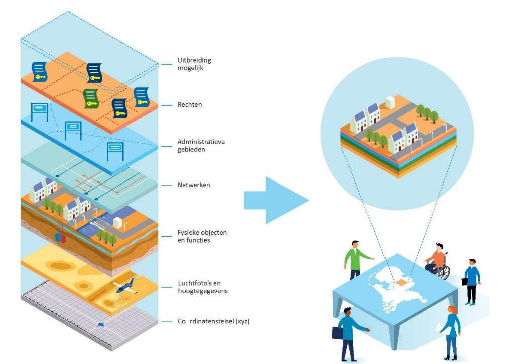
Figuur8.4 –De zes datalagen van de NGIIgevisualiseerd (bron:[[BZK-ZoNL]])
9. iSHARE
9.1 Inleiding
iSHARE is een Nederlands initiatief dat werkt aan een ‘trust framework’ of vertrouwenskader voor data spaces toegepast. iSHARE is een concrete invulling van vertrouwelijk data delen in een data space met gebruik van open standaarden. iSHARE biedt ook referentie implementaties voor de bijbehorende data voorzieningen.
Door gebruik te maken van het vertrouwenskader van iSHARE hebben data providers de zekerheid, dat organisaties die toegang hebben tot data diensten wettelijk onder de geheimhoudingsovereenkomst vallen en in de licentie blijven die met de data is afgegeven. En daarnaast heeft de data provider de zekerheid dat alleen data, die de data provider heeft geautoriseerd, wordt gedeeld met de afnemende partij die de data provider ook heeft geautoriseerd. iSHARE is een volledig gefedereerde structuur en juridisch kader, die vertrouwen, databescherming en datasoevereiniteit binnen data spaces mogelijk maakt.
iSHARE is ontstaan in de logistieke sector vanuit de vraag waarom organisaties weinig tot geen data met elkaar delen. Vanuit de eerste fase in 2016 is iSHARE opgebouwd met hulp van vele co-creatie partners. De co-creatiepartners hebben verschillende achtergronden: uit de private en publieke sector, organisaties van verschillende grootte, verschillende modaliteiten, zowel aanbieders als ontvangers van data, enz. Deze verscheidenheid aan organisaties zorgt ervoor dat het iSHARE vertrouwenskader breed toepasbaar is geworden.
9.2 iSHARE ‘trust framework’
Het iSHARE ‘trust framework’of vertrouwenskader is een uniforme set van afspraken voor Identificatie, Authenticatie en Autorisatie (IAA), inclusief tooling die benodigd is om het afsprakenstelsel te implementeren. Het iSHARE kader beschrijft een actormodel met zes rollen die, afhankelijk van de situatie, met elkaar interacteren op basis van de iSHARE ‘schemaovereenkomsten’ (zie figuur 6.1) [ISGOV].
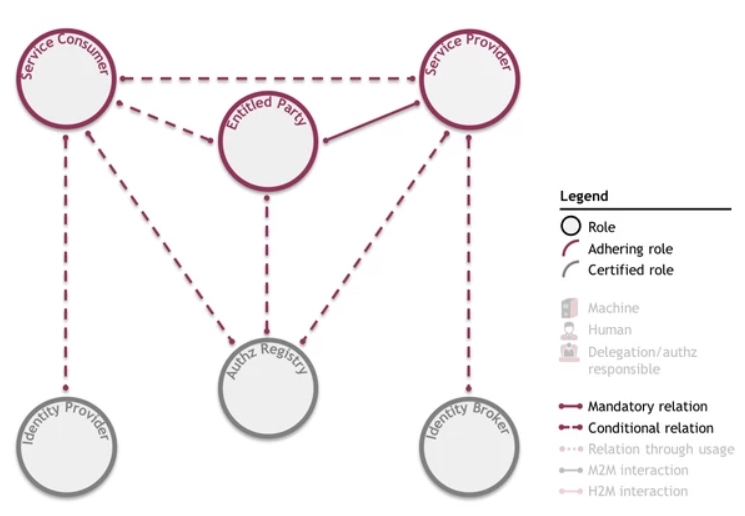
Figuur 6.1– iSHARE actormodel(bron:[[ISGOV]])
Elke rol heeft een bepaalde functie in het schema en draagt bepaalde verantwoordelijkheden. Elke partij, die een rol vervult in het iSHARE vertrouwensraamwerk moet iSHARE-houder of iSHARE-gecertificeerd zijn:
1. Partijen, die een ‘aanhangende rol’ vervullen, leveren en consumeren diensten onder iSHARE. Deze partijen houden zich aan de iSHARE gebruiksvoorwaarden;
2. Partijen, die een ‘gecertificeerde rol’ vervullen leveren de faciliterende functies, waarop de ‘aanhangende partijen’ kunnen vertrouwen bij het verlenen of consumeren van diensten. Om gecertificeerd te worden, moeten deze partijen niet alleen aantonen dat ze zich aan de iSHARE-gebruiksvoorwaarden houden, maar ook voldoen aan een aantal rolspecifieke criteria.
De‘serviceconsumer’wordt vervuld door een rechtspersoon, die een dienst gebruikt, zoals data diensten, zoals verstrekt door een‘service provider’. Een consument kan worden vertegenwoordigd door een machine (zijn systeem) of een mens (bijvoorbeeld de trucker), toepasselijk de‘machineserviceconsumer’en de‘human serviceconsumer’genoemd.Deserviceprovider wordt vervuld door een rechtspersoon die een dienst, zoalsdata, levert voor consumptie door een service consument. Deze rechtspersoon levert het resultaat van een dienst,die de service consument(en) nodig hebben.
Derol van‘entitled party’ of rechthebbende wordt vervuld door een rechtspersoon,die één of meer rechten heeft op een door eendienstverlener geleverde dienst, bijvoorbeeld opdata.De data eigenaar is een voorbeeld van een rechthebbende.Deze rechten, of aanspraken, zijn vastgelegd in een rechtsverhouding tussen derechthebbende en dedienstverlener.
De ‘identity provider’ of identiteitsprovider is een rechtspersoon wiens tooling mensen identificeert en authenticeert (en in het bijzonder human service consumers, die service consumers vertegenwoordigen). Een identiteitsprovider biedt identificatiegegevens voor mensen en geeft inloggegevens (d.w.z. een wachtwoord of elektronische keycard) aan mensen. Op basis van deze identificatie-informatie identificeert en authenticeert mensen voor de service providers. De identity provider bewaart de informatie over autorisaties van personen, die een service consument vertegenwoordigen, d.w.z. informatie die aangeeft welke personen bevoegd zijn om namens een service consumer te handelen. Op basis van deze informatie kan de identiteitsprovider nagaan of een persoon die een rechtspersoon vertegenwoordigt, bevoegd is om een dienst af te nemen en kan de identity provider aan de service provider bevestigen of dit het geval is. Als gevolg hiervan kunnen service providers de identificatie en authenticatie van mensen, evenals taken met betrekking tot het beheer van autorisatie- en delegatie-informatie van mensen, uitbesteden aan een identiteitsprovider (in plaats van hun eigen tooling te implementeren).
Als service providers ervoor kiezen om identificatie en verificatie uit te besteden aan meer dan één identiteitsprovider, kunnen ze verbinding maken met een ‘identity broker’of identiteitsmakelaar in plaats van met meerdere identiteitsproviders. Verschillende mensen kunnen id's hebben bij verschillende identiteitsproviders. Ook moeten service providers mogelijk verbinding maken met verschillende identiteitsproviders. Om ervoor te zorgen dat serviceproviders geen relatie met elke identiteitsprovider afzonderlijk nodig hebben, is een ‘identity broker’ geïntroduceerd. De identity broker is een rechtspersoon, die serviceproviders toegang biedt tot verschillende identity providers en die mensen de mogelijkheid biedt om te kiezen met welke identiteitsprovider zij zich in het gehele iSHARE Stelsel identificeren en authenticeren.
De rol van autorisatieregister wordt vervuld door een rechtspersoon, die oplossingen biedt voor de aanhangende partijen voor de opslag van delegatie- en autorisatie-informatie. Eenautorisatieregister beschikt over informatie over delegaties naar dienstverlenende consumenten; d.w.z. informatie die aangeeft welke delen van de rechten van een rechthebbende partij zijn gedelegeerd aan een serviceconsument. Op basis van deze informatie kan het autorisatieregister het nagaan of een machine die een rechtspersoon vertegenwoordigt, bevoegd is om een dienst af te nemen en bevestigt het autorisatieregister dit aan de Dienstverlener. Als gevolg hiervan kunnen de aanhangende partijen taken met betrekking tot het beheer van autorisatie- en delegatie-informatie uitbesteden aan een autorisatieregister (in plaats van hun eigen tooling te implementeren).
Om te illustreren hoe iSHARE vertrouwd data delen mogelijk maakt met behulp van het bovenstaande actormodel is hieronder een use case voorbeeld opgenomen. Om dit mechanisme van vertrouwd data delen toe te lichten, hanteren we het volgende iSHARE use case voorbeeld in geval van het CBS dat (statistische) data voor haar modaliteitsrapportage wil opvragen van een vertrouwde importeur van televisies die ook deelnemers is bij de iSHARE satelliet (zie figuur 6.2).
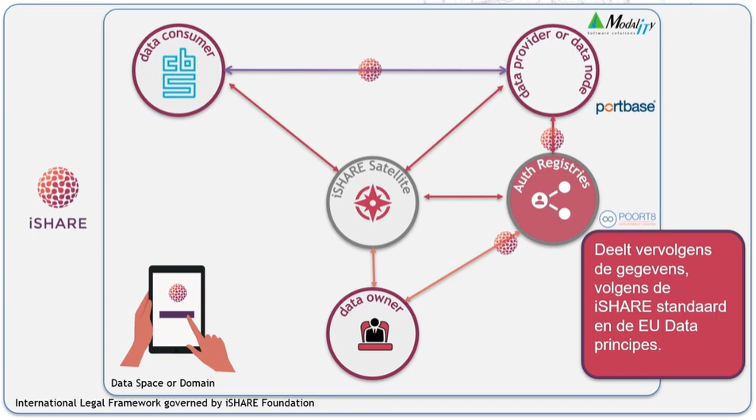
Figuur6.2–iSHAREusecase modaliteitsrapportage CBS
De volgende stappen worden doorlopen om de data delen:
CBS heeft data nodig van data eigenaar T (importeur van Televisies) voor haar modaliteitsrapportage en weet even niet of de data eigenaar T is aangesloten bij iSHARE en of de data beschikbaar is in het iSHARE netwerk;
CBS heeft toetst in het iSHARE netwerk of de data provider is aangesloten voor de betreffende dienst (de data voor modaliteitsrapportage) en waar de informatie van de data provider T verkrijgbaar is. Daarvoor raadpleegt CBS de iSHARE Satelliet.
De iShare Satelliet laat aan CBS weten bij welke data provider de data te halen is. Dit is data provider ‘Modality’.
Het CBS vraag aan de data provider ‘Modality’ of het CBS mag beschikken over de data van data eigenaar T. Het CBS vraagt aan de betreffende data provider Modality om de data.
De data provider ‘Modality’ controleert eerst of het CBS een betrouwbare data consument is en Modality doorloopt daarvoor de volgende ‘toetsen’: a. Modality controleer bij de Satelliet of data consument CBS in de iSHARE netwerk zit en b. Modality controleer bij de Satelliet of data eigenaar T in de iSHARE netwerk zit;
Modality toetst vervolgens in het autorisatieregister van Poort8, waar de autorisaties van de data eigenaar staan, of de gevraagde data dienst van eigenaar T wel gedeeld mag worden met het data consument CBS (en welke attributen; bepaalde velden gedeeld mogen worden).
Indien ja, dan levert Modality als data provider de data dienst aan data consument CBS;
Indien het autorisatieregister geen toestemming geeft, vraagt de data provider Modality aan de data eigenaar T of het de data dienst wil leveren aan het CBS. Als de eigenaar dat wil, dan laat eigenaar T dat weten aan het autorisatieregister en wordt het register bijgewerkt onder de voorwaarden van de T, zodat de data consument CBS toegang tot de data krijgt.
Modality levert als data provider de data aan data consument CBS.
De iSHARE Satelliet vormt de kern van het iSHARE-vertrouwensnetwerk, als coördinator en governancekern in een data space. Daarom wordt de iSHARE Satelliet beheerd door coördinerende organisaties binnen een data space, die deelnemers bedient en toegang geeft. De iSHARE Satelliet heeft de rol van ‘schemabeheerder’ en zorgt voor:
Toelating; vertrouwde registratie van deelnemers die gevalideerd zijn;
Terugtrekking:permanente beëindiging van deelnemers die de grenzen hebben overschreden of waarschuwingen negeerden;
Wijzigingen en updates:het registreren vanaanvullende gegevens aan deelnemers, zoals extradata spaces, extra gegevensveldenofnieuwe autorisatieregisters.
Binnen het iSHARE Satteliet (ook wel iShare Node genoemd) kunnen beheerders deelnemers registreren met:
-Hun unieke ID (EORI-nummers in overeenstemming met EU-identificatie) en
-EIDAS-identificatie;
- Een publieke sleutel(alleen voor dienstverleners en consumenten en gecertificeerde partijen);
- Ondertekendegebruiksvoorwaarden en eventuele aanvullende voorwaarden envan KvK-documentatie om er zeker van te zijn dat het contract wettelijk is ondertekend.
Voor het beheer van deelnemers heeft iSHARE eenwebinterfaceop de Satellite Node of API’sbeschikbaarvoor geautomatiseerde registratie.
Aangezien iSHARE een cross-domein data space trust framework is, wordt de registratie gedaan volgens de algemene voorwaarden van iSHARE in alle data spaces met iSHARE als vertrouwenskader. Organisaties, die deel uitmaken van het iSHAREnetwerk, de dataeigenaren, dataproviders endataconsumers, hebben allemaal dezelfdeNon-Disclosure Agreement engebruiksvoorwaarden ondertekend. Elke partij wordt in het registratieproces gevalideerd doordeiSHARE Satellietom een betrouwbare onboarding te garanderen. Via het federatieveautorisatieregistergevendataeigenaren toestemming voorgegevenskenmerkendiebeschikbaar zijn bij gegevensproviders, specifiek aan geselecteerde gegevensconsumenten met behulp vanlicenties. In ditsamenwerkingsschema, op basis van technische specificaties van iSHARE, kunnen partijen data echt aan het werk zetten, waar de data ook wordt opgeslagen bij SaaS-aanbieders in het iSHARE-netwerk of bij eigen diensten van data-eigenaren. De technische specificaties enAPI-architectuur van iSHAREzijn gebaseerd opde volgende onderdelen:
PKI en digitale certificaten; Voor de authenticatie van partijen en machines maakt iSHARE gebruik van PKI en digitale certificaten;
HTTP via TLS (HTTPS); iSHARE gebruikt het veelgebruikte HTTP-protocol voor zijn communicatie, inclusief TLS om de communicatie te versleutelen;
RESTful API’s; iSHARE gebruikt de RESTful-architectuurstijl om API's en HTTP-aanroepen te structureren;
JSON/JWT; Gegevens die in de iSHARE-context worden uitgewisseld, worden gestructureerd met behulp van de JSON-standaard. Waar onweerlegbaarheid vereist is, worden JSON Web Tokens (JWT) gebruikt;
XACML. Delegaties zijn gestructureerd volgens een JSON-poort van de XACML-standaard.
De combinatie van bovenstaande standaarden en protocollen leidt tot een zekere dynamiek tussen derollen in het iSHARE framework. In wezen verwerven service consumenten een token waarmee ze toegang hebben tot bepaalde services van bepaalde service providers. De rollen, die in het iSHARE framework zijn gespecificeerd, zijn losjes gebaseerd op de OAuth-standaard. Het OAuth2.0-protocol is een implementatietechnologie voor beleidsbeheer (‘policies’) met toegangstokens, gebaseerd op generieke webservice aanroepen in de vorm van API's. API’s van service providers gebruiken die toegangstokens voor verificatie van consumenten. Er wordt daarbij een tweefasenbenadering gevolgd, waarbij eerst een toegangstoken wordt verkregen van de service provider, op basis van goedkeuring door de rechthebbende partij, waarmee vervolgens de data service door de consument kan worden opgehaald bij de data provider. Beleidshandhavingsmogelijkheden zijn alleen vereist voor de data provider.
Het concept van iSHARE-satellieten in combinatie met de op iSHARE-standaarden gebaseerde autorisatieregisterrol in data spaces is eveneens gebaseerd op IDSA’s RAM en vervolledigt de waardepropositie van volledig vertrouwen en zekerheid op juridische en technische basis van de deelnemers voor data spaces.
De besturing (‘governance’) van iSHARE is geregeld in een Nederlandse stichting, opgericht In 2018, die de besturing regelt van iSHARE. Deelnemende partijen aan iSHARE kunnen – door een overeenkomst aan te gaan met deze stichting -, toetreden tot het netwerk van vertrouwen dat gebaseerd is op het iSHARE afsprakenstelsel. Een partij die toetreedt, werkt volgens de afspraken van het stelsel. Daartoe integreert zij de API-specificaties in haar software en toont daarbij aan te voldoen aan de afspraken van het stelsel. Om formeel toe te treden tekent zij een zogenaamde ‘Toetredingsovereenkomst’ met de Stichting iSHARE. De besturing van iSHARE schema ligt bij de ISHARE stichting is vastgelegd in het governancemodel van iSHARE (zie figuur 6.3) [ISGOVF]. De iSHARE satellieten (data spaces) benoemen de leden in de iSHARE governancestructuur en de data spaces die iSHARE als trust framework gebruiken krijgen een plaats in de iSHARE governancestructuur en hebben via die structuur invloed op de verdere ontwikkeling en behartiging van het belang van de dataspaces.
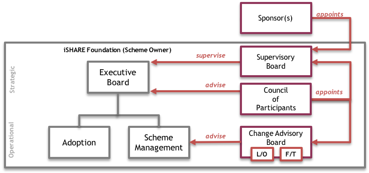
Figuur6.3–Organisatie vaniSHARE(bron:iSHARE)
9.3 Synthese
OPENDEI heeft het concept van de data space uitgewerkt in termen van een zachte infrastructuur bestaande uit 12 bouwstenen. Het OPENDEI bouwstenenmodel laat zien, dat data sovereiniteit en vertrouwen en de drie bijbehorende bouwstenen ‘Identity Management’, Trusted Exchange’ en ‘Access & Usage Control/Policies’ een belangrijk en integraal onderdeel zijn van het data space concept. Gezamenlijk worden ze het ‘vertrouwenskader’ genoemd. OPEN DEI definieert een ‘trust framework’ als “een structuur die mensen en organisaties veilig en betrouwbaar online zaken laat doen” [OPENDEI-DPR]. ISHARE positioneert zichzelf in deze categorie (zie figuur 6.4).
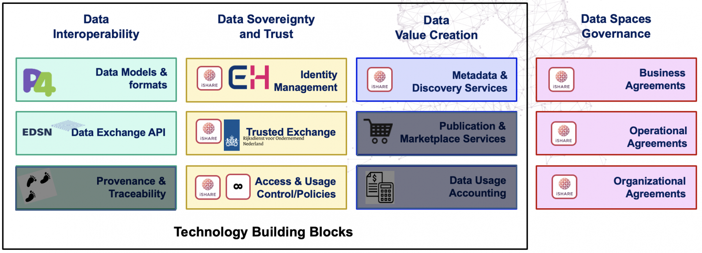
Figuur6.4– FocusgebiedeniSHAREin relatie tot het OPENDEImodel (bron:iSHARE)
Ook geeft iShare invulling aan de ontwikkeling van data spaces in lijn met de International Data Spaces Association (Reference Architecture 4.0) en Gaia-X. Door middel van het iSHARE trust framework faciliteren we met de iSHARE serviceproviders een van de basiscomponenten van data spaces en leveren we deze, in overeenstemming met de ontwerp-principes van Opendei.eu, maar ook in overeenstemming met de grotere oplossingsarchitecturen zoals International Data Spaces Association en Gaia-X. Hierbij werkt iShare nauw samen met de internationale gemeenschap aan datastandaarden en andere bouwstenen voor data spaces om deze data spaces in heel Europa te stimuleren.
iSHARE is ontstaan in de logistiek, maar tevens generiek toepasbaar. Inmiddels is iSHARE zijn vleugels aan het uitslaan naar andere toepassingsdomeinen (figuur 6.5).
Als iSHARE referentiearchitectuur is iSHARE Scheme. In het iSHARE Schema is o.a. het actorenmodel opgenomen. Ook het specifieke vrij centraal georganiseerde governancemodel is in iSHARE Schema opgenomen.
Het belangrijkste focusgebied van iSHARE is het volledige uitgewerkte vertrouwenskader met een voorbeeldimplementaties van de componenten op github.
Het participanten register is eveneens als focusgebied getypeerd, omdat het overeenkomt met de catalogus concept (meta discovery).
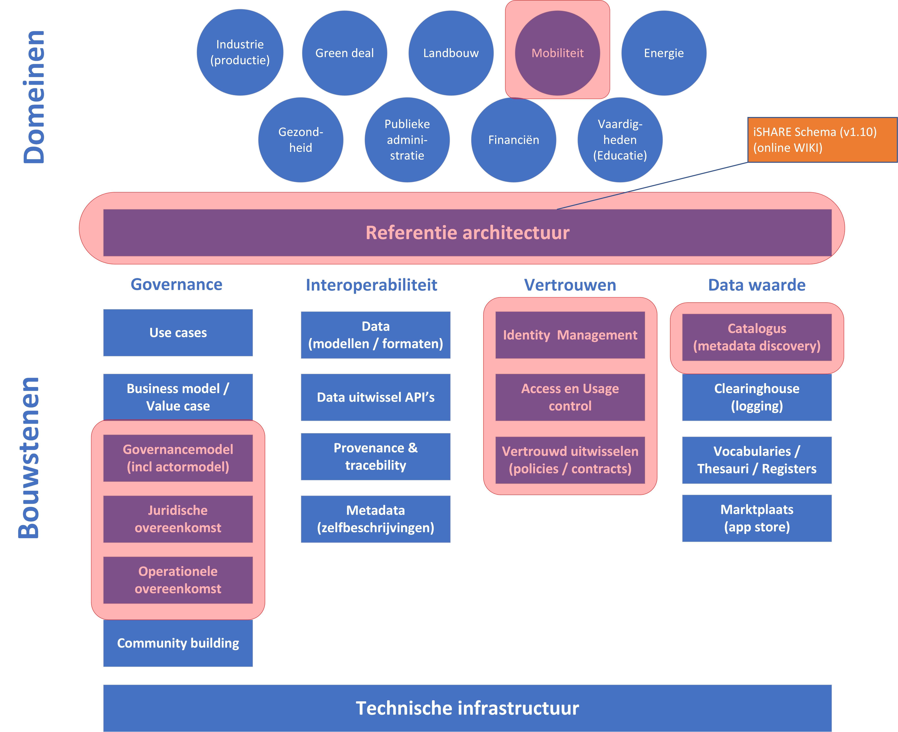
Figuur6.5– Focusgebieden vaniSHARE
Een nadere duiding van het iSHARE initiatief als vertrouwenskader voor data spaces ten opzichte van enkele eerder besproken Europese data space initiatieven IDSA (hoofdstuk 2), GAIA-X (hoofdstuk 3) en OPENDEI (hoofdstuk 4) is uiteengezet in [TNO].
Ook moet het recent gelanceerde i4Trust EU project bijdragen aan verdere afstemming tussen het vertrouwenskader van iSHARE en enkele Europese data space initiatieven. I4Trust stimuleert met subsidies de totstandkoming van data spaces in verschillende domeinen en heeft als doel daarmee de data-economie met data spaces in Europa te versnellen. Daarbij wordt gebruik gemaakt van bestaande FIWARE componenten en het iSHARE Trust framework.
In de recente samenwerking tussen iSHARE en Gaia-X, zijn partijen overeengekomen om beide Trust Frameworks te harmoniseren om ontwikkeling van data spaces te versnellen. Het doel hiervan is geharmoniseerde interfaces en vertrouwensniveaus, wat in lijn is met de samenwerkingsovereenkomst tussen iSHARE en International Data Spaces Association. Deze heeft als doel om op één lijn te zitten met het gezamenlijke technologie framework dat ontwikkeld wordt door de Data Spaces Business Alliance (BDVA, Gaia-X, IDSA, FIWARE).
Het Identity and Access Management framework van i4Trust zal evolueren om af te stemmen met de resultaten van de recente Technology Convergence discussie onder de koepel van de Data Spaces Business Alliance.
Zicht op Nederland. Naar een gezamenlijk geo-datafundament voor het bouwen aan onze leefomgeving. Ministerie van Economische zaken en Koninkrijksrelaties.